CRVI000984 - Jadwiga
Trademark · owner not established · designer unknown
Trademark · owner not established · designer unknown

CRVI000527Haley Kluge - No Words. What the Writers Strike Means for Hollywood
Variety, May 3, 2023 · 2023
Variety, May 3, 2023 · 2023

CRVI000645Robert Vargas - If You Can't Read That, You'd Better Read This
Bloomberg Businessweek, June 15–28 2015 · 2015
Bloomberg Businessweek, June 15–28 2015 · 2015
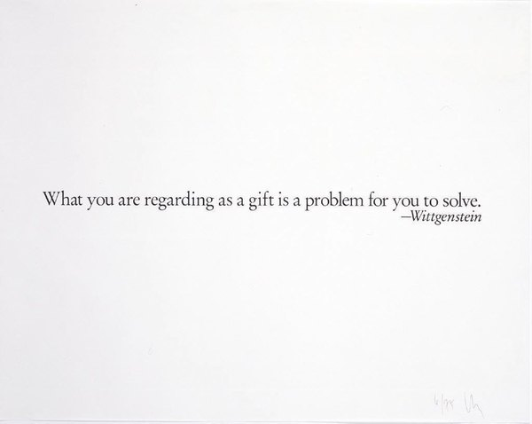
CRVI001896Joseph Kosuth - Ex Libris (Wittgenstein's Gift)
1990
1990
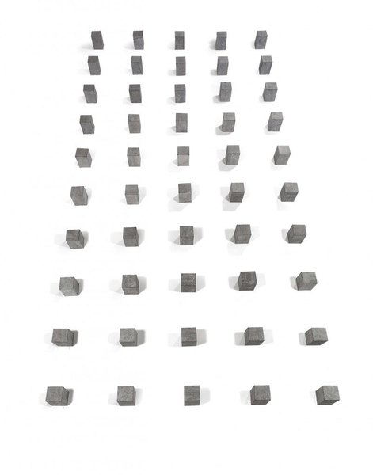
CRVI001870Carl Andre - Belgica Blue Field
1989
1989

CRVI000490Unknown - The Psychic Toll of a Dead-Even Race
New York, November 4-17, 2024 · 2024
New York, November 4-17, 2024 · 2024

CRVI000855Richard Turley - Design
Bloomberg Businessweek · 2012
Bloomberg Businessweek · 2012

CRVI000556Gail Bichler - The Future of Work When No One Wants to Work
The New York Times Magazine, February 20, 2022 · 2022
The New York Times Magazine, February 20, 2022 · 2022

CRVI001361Andrew Kuo - Charting 'Thank You for Letting Me Be Myself' by Omar S
Chart for The New York Times · 2013-06-25 · 2013
Chart for The New York Times · 2013-06-25 · 2013

CRVI000321Loscil - Plume
Designer unknown · Kranky · 2006
Designer unknown · Kranky · 2006

CRVI000989Honey Packers, Inc. - honey
Trademark · Honey · New York, New York · designer unknown · 1936
Trademark · Honey · New York, New York · designer unknown · 1936

CRVI000937 - Nuki
Trademark · owner not established · designer unknown
Trademark · owner not established · designer unknown

CRVI000974 - new gold
Trademark · owner not established · designer unknown
Trademark · owner not established · designer unknown

CRVI001360Andrew Kuo - Charted: The Year of Kanye West
Chart for The New York Times · 2013-12-13 · 2013
Chart for The New York Times · 2013-12-13 · 2013

CRVI001388Ruth Asawa - Untitled (S.693, Hanging Six-Lobed, Two-Part, Discontinuous Surface with a Sphere in the First Lobe)
Ruth Asawa · c. 1956 · hanging sculpture, brass and iron wire · photograph by Dan Bradica · 1956
Ruth Asawa · c. 1956 · hanging sculpture, brass and iron wire · photograph by Dan Bradica · 1956

CRVI001037 - Drawing on music staves
Cooper Hewitt, Smithsonian Design Museum, 1981-29-424
Cooper Hewitt, Smithsonian Design Museum, 1981-29-424

CRVI001003Cleveland Institute of Radio Electronics - C i
Trademark · Pamphlets, Books, and Other Publications · Cleveland, Ohio · designer unknown · 1956
Trademark · Pamphlets, Books, and Other Publications · Cleveland, Ohio · designer unknown · 1956

CRVI000970 - Laff
Trademark · owner not established · designer unknown
Trademark · owner not established · designer unknown

CRVI000983 - New Pride
Trademark · owner not established · designer unknown
Trademark · owner not established · designer unknown

CRVI000933 - AD
Trademark · owner not established · designer unknown
Trademark · owner not established · designer unknown
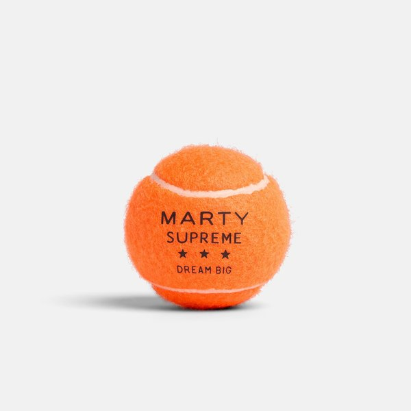
CRVI002432Unattributed - Marty Supreme Tennis Balls
2025
2025

CRVI000981 - Dewis
Trademark · owner not established · designer unknown
Trademark · owner not established · designer unknown
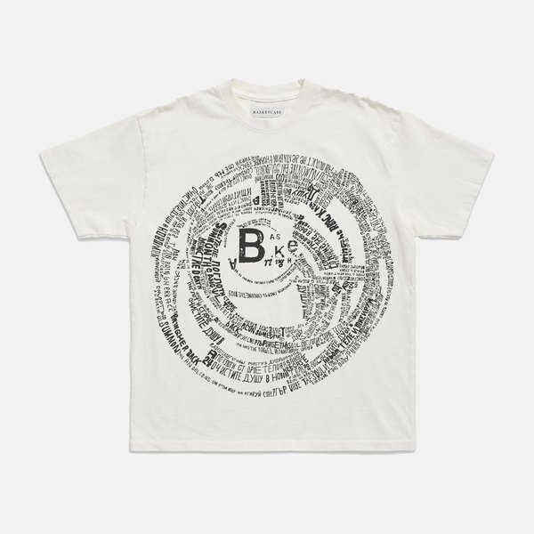
CRVI002428Unattributed - Bring Her Back x Basketcase Ritual Tee
2025
2025

CRVI000916 - An angular E or F crossed by an arrow
Trademark · owner not established · designer unknown
Trademark · owner not established · designer unknown

CRVI000796Hannah Wilke - Untitled
Coloured pencil, pencil and graphite on paper · 45.7 × 61 cm · 1969
Coloured pencil, pencil and graphite on paper · 45.7 × 61 cm · 1969

CRVI000921Dow Corning Corporation - DOW CORNING
Trademark · Organopolysiloxane Fluids for Use as Polishes and Polish Ingredients · Midland, Michigan · designer unknown · 1957
Trademark · Organopolysiloxane Fluids for Use as Polishes and Polish Ingredients · Midland, Michigan · designer unknown · 1957

CRVI000976 - FRAT HOUSE
Trademark · owner not established · designer unknown
Trademark · owner not established · designer unknown

CRVI001354Ruth Asawa - Untitled (S.237, Hanging Six-Lobed, Interlocking Continuous Form)
Ruth Asawa · c. 1958 · hanging sculpture, enameled copper and brass wire · 1958
Ruth Asawa · c. 1958 · hanging sculpture, enameled copper and brass wire · 1958

CRVI001384Whitney Museum of American Art - Annual Exhibition 1966: Contemporary Sculpture and Prints
Designer unrecorded · Exhibition catalogue · Dec 16, 1966 – Feb 5, 1967 · 1966
Designer unrecorded · Exhibition catalogue · Dec 16, 1966 – Feb 5, 1967 · 1966

CRVI001004 - An orbital cage folded from ribbons
Trademark · owner not established · designer unknown
Trademark · owner not established · designer unknown

CRVI000893 - NO-MO
Trademark · owner not established · designer unknown
Trademark · owner not established · designer unknown

CRVI000894 - A figure whose head and body are a television set
Trademark · owner not established · designer unknown
Trademark · owner not established · designer unknown

CRVI000938 - NEON
Trademark · owner not established · designer unknown
Trademark · owner not established · designer unknown
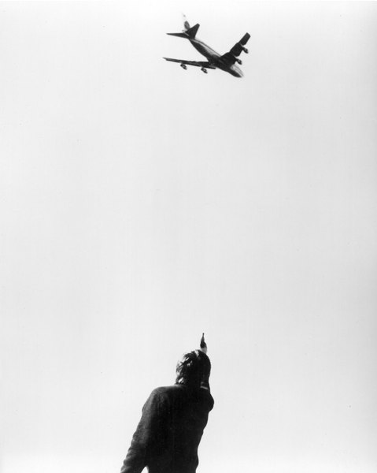
CRVI002138Chris Burden - Untitled

CRVI000547Oliver Munday - Who Killed America's Newspapers?
The Atlantic, November 2021 · 2021
The Atlantic, November 2021 · 2021
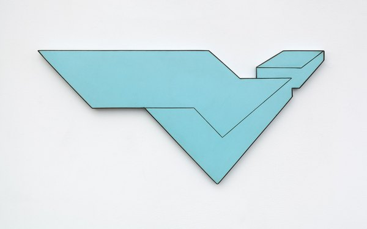
CRVI001901Unidentified - Blue shaped panel
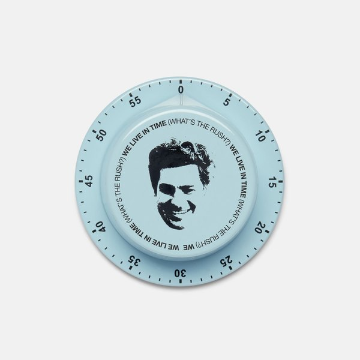
CRVI002429Unattributed - We Live In Time Kitchen Timer
2024
2024

CRVI000940H.F. Stimm, Inc. - S
Trademark · Construction and Repair of Buildings and Bridges · Buffalo, New York · designer unknown · 1956
Trademark · Construction and Repair of Buildings and Bridges · Buffalo, New York · designer unknown · 1956

CRVI000502Peter Herbert - The World at a Crossroads
Fortune, August/September 2020 · 2020
Fortune, August/September 2020 · 2020

CRVI001366Kenny Burrell - Kenny Burrell
Cover drawing by Andy Warhol · Blue Note 1543 · 1957
Cover drawing by Andy Warhol · Blue Note 1543 · 1957

CRVI000780Paul Rand - Jacqueline Cochran leg makeup
Advertisement
Advertisement

CRVI000973 - PARK LANE
Trademark · owner not established · designer unknown
Trademark · owner not established · designer unknown

CRVI000892 - A punched card drawn as a figure with spectacles and a pipe
Trademark · owner not established · designer unknown
Trademark · owner not established · designer unknown

CRVI000954Coopers, Inc. - Four figures in undergarments beneath a waistband marked OPENING; the only caption on the page
Trademark · Men's Undergarments · Kenosha, Wisconsin · designer unknown · 1938
Trademark · Men's Undergarments · Kenosha, Wisconsin · designer unknown · 1938

CRVI000531Unknown - The Lunacy of Text-Based Therapy
New York, March 29-April 11, 2021 · 2021
New York, March 29-April 11, 2021 · 2021

CRVI000966 - METAPAD
Trademark · owner not established · designer unknown
Trademark · owner not established · designer unknown

CRVI000797Hannah Wilke - Untitled
Coloured pencil and pencil on paper · 45.7 × 61 cm · 1967
Coloured pencil and pencil on paper · 45.7 × 61 cm · 1967

CRVI000900 - X1
Trademark · owner not established · designer unknown
Trademark · owner not established · designer unknown
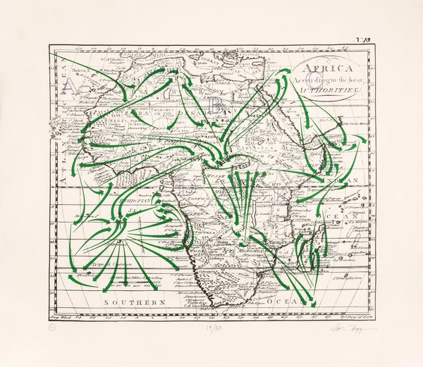
CRVI002383Dick Higgins - Hommage to Africa
1989
1989

CRVI001291Phil Woods, Gene Quill, Sahib Shihab, Hal Stein - Four Altos
Designed by Reid Miles · Prestige 7116 · 1958
Designed by Reid Miles · Prestige 7116 · 1958

CRVI000971 - Two heavy 3-D letters
Trademark · owner not established · designer unknown
Trademark · owner not established · designer unknown

CRVI000890 - Figure on a unicycle carrying a box
Trademark · owner not established · designer unknown
Trademark · owner not established · designer unknown

CRVI000733Robert Beatty - Untitled
Album cover · artist and title unrecorded · Trendland plate 02
Album cover · artist and title unrecorded · Trendland plate 02

CRVI000950 - SUSIE Q
Trademark · owner not established · designer unknown
Trademark · owner not established · designer unknown
CRVI002294Jeff Koons - Amore
1988
1988

CRVI000943Homasote Company - BIG SHEETS
Trademark · Wall Board and Fibrous Material · Trenton, New Jersey · designer unknown · 1955
Trademark · Wall Board and Fibrous Material · Trenton, New Jersey · designer unknown · 1955

CRVI000992John Sunshine Chemical Co., Inc. - CANNIBAL — EATS EVERYTHING IN THE PIPE
Trademark · Drainpipe Cleaner · Chicago, Illinois · designer unknown · 1938
Trademark · Drainpipe Cleaner · Chicago, Illinois · designer unknown · 1938

CRVI001001Community Church of Religious Science - Your world is Your reflection of Your understanding
Trademark · Religious Educational Books · Los Angeles, California · designer unknown · 1974
Trademark · Religious Educational Books · Los Angeles, California · designer unknown · 1974
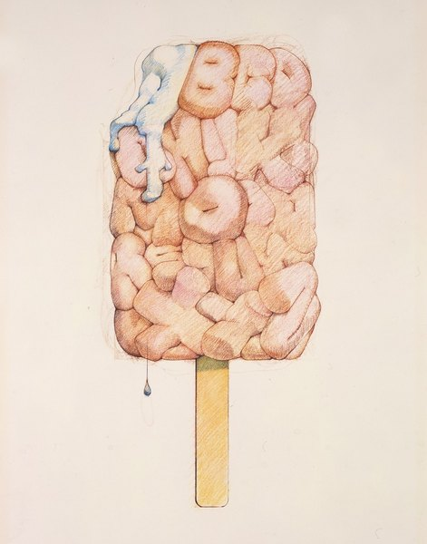
CRVI002252Claes Oldenburg - Alphabet/Good Humor

CRVI001006Wilson & Company, Inc. - W
Trademark · Fresh, Cooked, Smoked, Cured and Frozen Meats · Chicago, Illinois · designer unknown · 1957
Trademark · Fresh, Cooked, Smoked, Cured and Frozen Meats · Chicago, Illinois · designer unknown · 1957
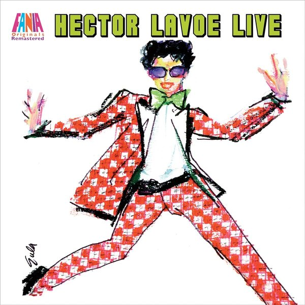
CRVI002482Héctor Lavoe - Live

CRVI000913 - 1 / 10
Trademark · owner not established · designer unknown
Trademark · owner not established · designer unknown

CRVI000915 - Marlou
Trademark · owner not established · designer unknown
Trademark · owner not established · designer unknown

CRVI000934Miljam Plastic Instrument Manufacturing Company, Inc. - Injex
Trademark · Plastic instruments · designer unknown · 1952
Trademark · Plastic instruments · designer unknown · 1952

CRVI002131Judy Chicago - 3 Star Cunts
1969
1969

CRVI000144Bud Shank Quartet - Jazz at Cal-Tech
Designed by William Claxton · Pacific Jazz 1219 · 1956
Designed by William Claxton · Pacific Jazz 1219 · 1956

CRVI000911Bell Aircraft Corporation - BELL Aircraft
Trademark · Wheatfield, New York · designer unknown · 1946
Trademark · Wheatfield, New York · designer unknown · 1946

CRVI001834Richard Anuszkiewicz - Spring Mix
2000
2000

CRVI000997Five Minute Home Cleaner Co. - A figure holding a clock aloft — the five minutes of the company's name
Trademark · Dry Cleaner · Chicago, Illinois · designer unknown · 1930
Trademark · Dry Cleaner · Chicago, Illinois · designer unknown · 1930

CRVI000948 - SKE-DADDLE
Trademark · owner not established · designer unknown
Trademark · owner not established · designer unknown

CRVI001143Jackie McLean - Destination... Out!
Designed by Larry Miller, photograph by Francis Wolff · Blue Note BLP 4165 · 1964
Designed by Larry Miller, photograph by Francis Wolff · Blue Note BLP 4165 · 1964

CRVI000926Ernest H. Vanderwall Company - EVCO
Trademark · Lathe Center · San Francisco, California · designer unknown · 1947
Trademark · Lathe Center · San Francisco, California · designer unknown · 1947

CRVI000518Gail Bichler - What Was Twitter, Anyway?
The New York Times Magazine, April 23, 2023 · 2023
The New York Times Magazine, April 23, 2023 · 2023

CRVI000528Gail Bichler - Should You Be in Therapy?
The New York Times Magazine, May 21, 2023 · 2023
The New York Times Magazine, May 21, 2023 · 2023

CRVI000543Bobby Doherty - New Yawk Style
New York, March 1-14, 2021 · 2021
New York, March 1-14, 2021 · 2021
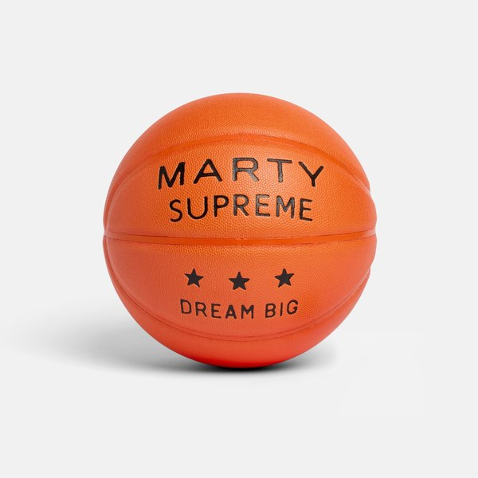
CRVI002431Unattributed - Marty Supreme Basketball
2025
2025

CRVI001908John Baldessari - Painting for Kubler
1968
1968

CRVI000464Richard Turley - The Hedge Fund Myth
Bloomberg Businessweek, 15 July 2013 · 2013
Bloomberg Businessweek, 15 July 2013 · 2013

CRVI000793Roy Kuhlman - Yoo-Yoo
Journal of the American Medical Association · 1954
Journal of the American Medical Association · 1954

CRVI001875Agnes Martin - Untitled #12
1977
1977

CRVI001357Ruth Asawa - Untitled (S.055, Hanging Asymmetrical Nine Interlocking Bubbles)
Ruth Asawa · c. 1955 · hanging sculpture, galvanized steel, enameled copper and brass wire · 1955
Ruth Asawa · c. 1955 · hanging sculpture, galvanized steel, enameled copper and brass wire · 1955

CRVI000951 - THE JITTERBUG
Trademark · owner not established · designer unknown
Trademark · owner not established · designer unknown

CRVI000968 - A fan of blades rising from a ringed monogram
Trademark · owner not established · designer unknown
Trademark · owner not established · designer unknown

CRVI001171Serge Chaloff - Blue Serge
Designer unrecorded · Capitol Records T 742 · 1956
Designer unrecorded · Capitol Records T 742 · 1956

CRVI001014Delcon Corp. - d
Trademark · Electrical Measuring Devices · Palo Alto, California · designer unknown · 1963
Trademark · Electrical Measuring Devices · Palo Alto, California · designer unknown · 1963

CRVI000924Bowlerama, Inc. - BOWLERAMA
Trademark · Promoting the Business of Bowling Alley Operations · Minneapolis, Minnesota · designer unknown · 1954
Trademark · Promoting the Business of Bowling Alley Operations · Minneapolis, Minnesota · designer unknown · 1954

CRVI000901Micro-Master, Inc. - An atom whose nucleus is a head
Trademark · Photograph Developing · Kansas City, Missouri · designer unknown · 1957
Trademark · Photograph Developing · Kansas City, Missouri · designer unknown · 1957

CRVI000721Ziemba - True Romantic
Designed by Robert Beatty · Sister Polygon Records · 2020
Designed by Robert Beatty · Sister Polygon Records · 2020

CRVI000986Southern Oak Flooring Industries - SOFI
Trademark · Flooring: Tongued and Grooved, End-Matched, Square Edge Strips, Parquetry and Fabricated Blocks · Little Rock, Arkansas · designer unknown · 1931
Trademark · Flooring: Tongued and Grooved, End-Matched, Square Edge Strips, Parquetry and Fabricated Blocks · Little Rock, Arkansas · designer unknown · 1931
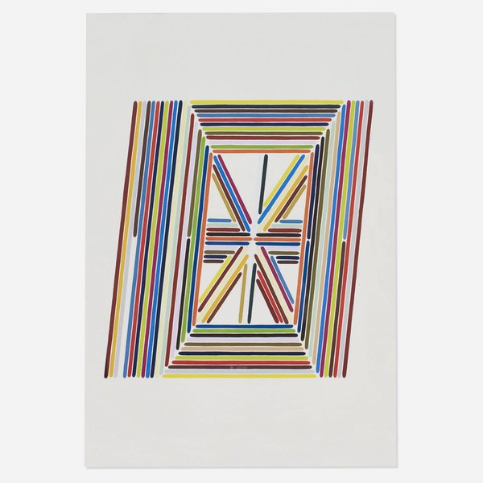
CRVI002365Tauba Auerbach - Untitled (The Whole Alphabet, From the Center Out)

CRVI001008Motown Records Corp. - The Supremes
Trademark · Entertainment Services · Detroit, Michigan · designer unknown · 1974
Trademark · Entertainment Services · Detroit, Michigan · designer unknown · 1974

CRVI000586Unknown - This Machine Swallows Buses While Going 60 mph
New York, February 24, 1969 · 1969
New York, February 24, 1969 · 1969

CRVI000909Prestile Manufacturing Company - PRESTILE
Trademark · Synthetic Adhesive Cements in Liquid or Solid Form · Chicago, Illinois · designer unknown · 1947
Trademark · Synthetic Adhesive Cements in Liquid or Solid Form · Chicago, Illinois · designer unknown · 1947

CRVI000935 - N o
Trademark · owner not established · designer unknown
Trademark · owner not established · designer unknown

CRVI001872Agnes Martin - Aspiration
1960
1960
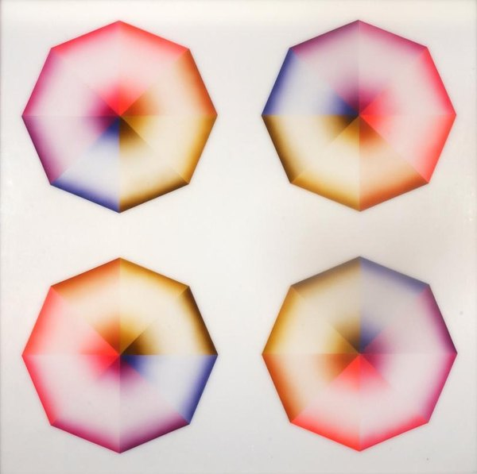
CRVI002130Judy Chicago - Pasadena Lifesavers Red #5
1970
1970

CRVI000177Hank Mobley - Tenor Conclave
Designed by Bob Weinstock · Prestige LP 7074 · 1956
Designed by Bob Weinstock · Prestige LP 7074 · 1956
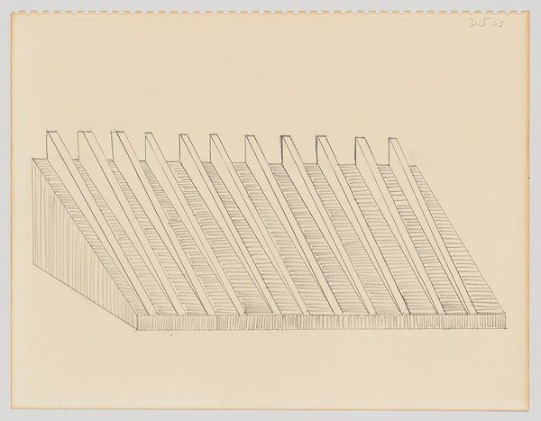
CRVI001863Donald Judd - Untitled (drawing)
1963
1963

CRVI000794Roy Kuhlman - The Ticket That Exploded
Grove Press · William S. Burroughs
Grove Press · William S. Burroughs

CRVI001309Lee Morgan - The Rumproller
Designed by Reid Miles, photograph by Francis Wolff · Blue Note 4199 · 1965
Designed by Reid Miles, photograph by Francis Wolff · Blue Note 4199 · 1965

CRVI000591Unknown - Doctor Feelgood, You Make Me Feel So Good. Are You Sure It's All Right?
New York, February 8, 1971 · 1971
New York, February 8, 1971 · 1971

CRVI000964 - EZ ON THE (eyes)
Trademark · owner not established · designer unknown
Trademark · owner not established · designer unknown

CRVI000965Atlas Tack Corp. - ATLAS
Trademark · Nails and Tacks · Fairhaven, Massachusetts · designer unknown · 1936
Trademark · Nails and Tacks · Fairhaven, Massachusetts · designer unknown · 1936

CRVI000734Robert Beatty - Untitled
Album cover · artist and title unrecorded · Trendland plate 03
Album cover · artist and title unrecorded · Trendland plate 03

CRVI000505Gail Bichler - What We've Learned in Quarantine
The New York Times Magazine, May 24, 2020 · 2020
The New York Times Magazine, May 24, 2020 · 2020
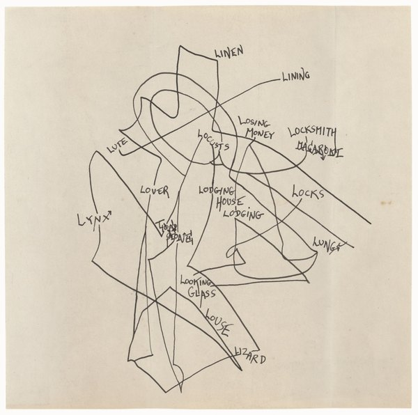
CRVI002384Dick Higgins - Graphis No. 82
1960
1960
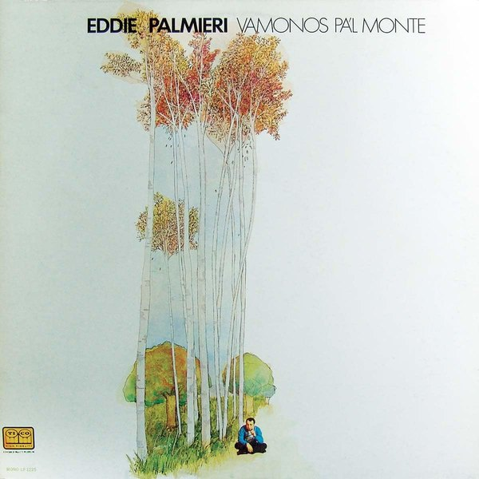
CRVI002486Eddie Palmieri - Vámonos Pa'l Monte
1971
1971

CRVI000903Pacific Gas Corporation - PACIFIC GAS
Trademark · Butane and Propane Gases · New York, New York · designer unknown · 1948
Trademark · Butane and Propane Gases · New York, New York · designer unknown · 1948
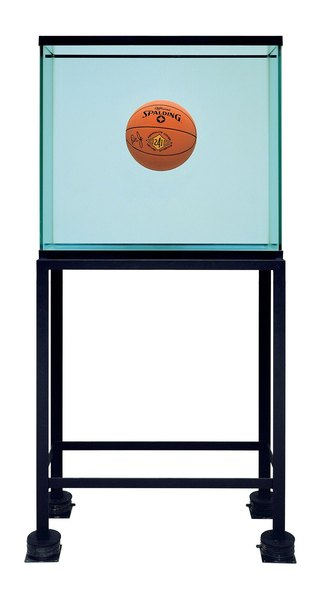
CRVI002297Jeff Koons - One Ball Total Equilibrium Tank (Spalding Dr. J 241 Series)
1985
1985

CRVI001381Benny Golson - Benny Golson and the Philadelphians
Designer unrecorded · United Artists 4020 · 1959
Designer unrecorded · United Artists 4020 · 1959

CRVI000599Unknown - 1977: It All Happened Here. Where Else?
New York, December 26, 1977 · 1977
New York, December 26, 1977 · 1977

CRVI000737Robert Beatty - Untitled
Album cover · artist and title unrecorded · Trendland plate 06
Album cover · artist and title unrecorded · Trendland plate 06

CRVI000303Suicide - Suicide
Designer unknown · Red Star · 1977
Designer unknown · Red Star · 1977

CRVI001385Whitney Museum of American Art - 1964 Annual Exhibition of Contemporary American Sculpture
Designer unrecorded · Exhibition catalogue · Dec 9, 1964 – Jan 31, 1965 · 1964
Designer unrecorded · Exhibition catalogue · Dec 9, 1964 – Jan 31, 1965 · 1964
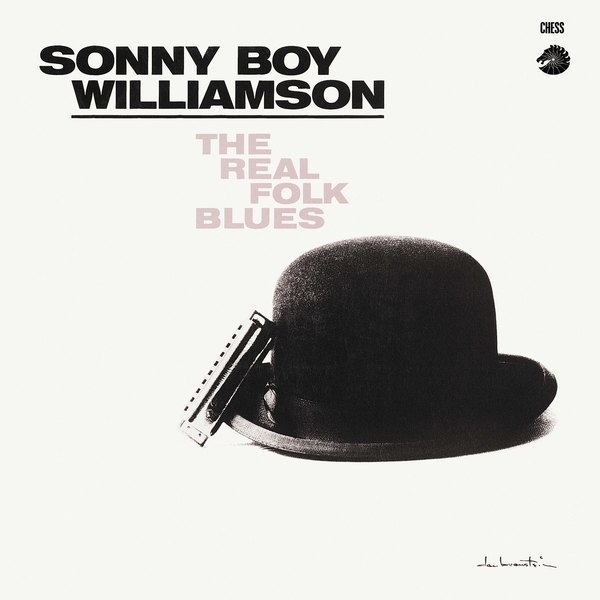
CRVI002610Sonny Boy Williamson - The Real Folk Blues
1966
1966

CRVI000972 - PRO-TEX
Trademark · owner not established · designer unknown
Trademark · owner not established · designer unknown

CRVI001125Dexter Gordon - Go
Designed by Reid Miles, photograph by Francis Wolff · Blue Note BLP 4112 · 1962
Designed by Reid Miles, photograph by Francis Wolff · Blue Note BLP 4112 · 1962

CRVI000944 - SILVERTONE
Trademark · owner not established · designer unknown
Trademark · owner not established · designer unknown
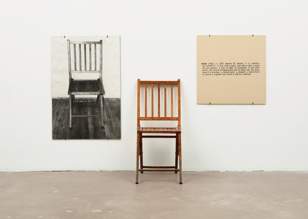
CRVI001894Joseph Kosuth - One and Three Chairs
1965
1965

CRVI000629Chin Wang, Hank Willis Thomas in collaboration with Sanford Biggers - Who Owns Black Pain?
Harper's Magazine, July 2017 · 2017
Harper's Magazine, July 2017 · 2017

CRVI000777Chermayeff & Geismar Associates - Print, September/October 1962
Print XVI:V · 1962
Print XVI:V · 1962

CRVI001283The Modern Jazz Quartet - Concorde
Designed by Reid Miles · Prestige 7005 · 1955
Designed by Reid Miles · Prestige 7005 · 1955
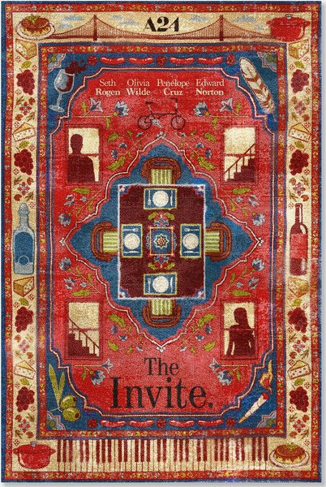
CRVI002434Allison Reimold - The Invite Mini Poster

CRVI001578Georgia O'Keeffe - White Flower
1929
1929

CRVI000476Mark Harris - Whitewash
The New York Times Magazine, March 17, 2024 · 2024
The New York Times Magazine, March 17, 2024 · 2024
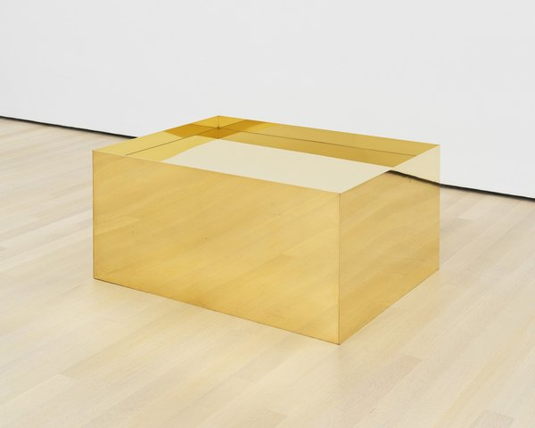
CRVI001864Donald Judd - Untitled
1968
1968

CRVI000952The Guild Shirt Co. - GUILDHALL
Trademark · Outer Shirts and Pajamas of Textile Fabrics · Hazleton, Pennsylvania · designer unknown · 1936
Trademark · Outer Shirts and Pajamas of Textile Fabrics · Hazleton, Pennsylvania · designer unknown · 1936

CRVI000384Mark Isham - Vapor Drawings
Designer unknown · Windham Hill · 1983
Designer unknown · Windham Hill · 1983

CRVI002566Eddie Palmieri - Justicia
1968
1968

CRVI000985 - Glit
Trademark · owner not established · designer unknown
Trademark · owner not established · designer unknown

CRVI002530Mingering Mike - 20 Hits Plus a Free 45 Entilted "T.V. Dinners of Mines." & "Eat Now and Eat Later"

CRVI000327The Marvelettes - Please Mr. Postman
Designer unknown · Tamla · 1961
Designer unknown · Tamla · 1961

CRVI000392M. Geddes Gengras - Test Leads
Designer unknown · Holy Mountain · 2012
Designer unknown · Holy Mountain · 2012

CRVI000917 - KEMKOR
Trademark · owner not established · designer unknown
Trademark · owner not established · designer unknown

CRVI000939Dallas Iron & Wire Works, Inc. - Add-A-Play
Trademark · Swings, Gliders, Gyms, Exercise Frames and Parts Thereof · Dallas, Texas · designer unknown · 1953
Trademark · Swings, Gliders, Gyms, Exercise Frames and Parts Thereof · Dallas, Texas · designer unknown · 1953

CRVI001406Duane Hanson - Baton Twirler
Duane Hanson · 1971 · 1971
Duane Hanson · 1971 · 1971

CRVI000922United Co-operatives, Inc. - UNICO Ac-cent
Trademark · Ready-Mixed Paints · Alliance, Ohio · designer unknown · 1954
Trademark · Ready-Mixed Paints · Alliance, Ohio · designer unknown · 1954

CRVI001579Georgia O'Keeffe - White Pansy
1927
1927
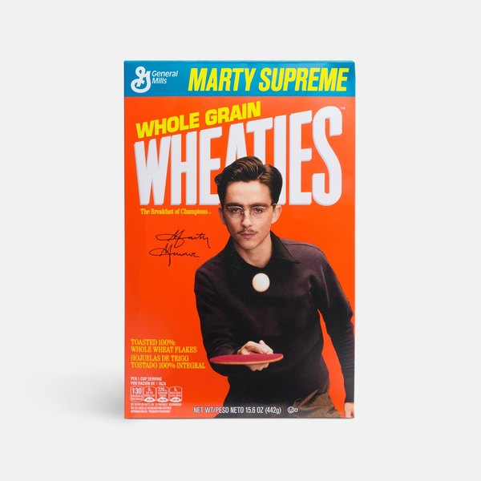
CRVI002433Unattributed - Marty Supreme Wheaties Box
2025
2025

CRVI001124Dexter Gordon - Gettin' Around
Designed by Reid Miles, photograph by Francis Wolff · Blue Note BST 84204 · 1965
Designed by Reid Miles, photograph by Francis Wolff · Blue Note BST 84204 · 1965

CRVI000955Glorasheen Products Co. - GLORASHEEN
Trademark · Hair Coloring Preparation · Los Angeles, California · designer unknown · 1934
Trademark · Hair Coloring Preparation · Los Angeles, California · designer unknown · 1934

CRVI000884Minnesota Macaroni Company - Woman holding a package
Trademark · St. Paul, Minnesota · designer unknown · 1940
Trademark · St. Paul, Minnesota · designer unknown · 1940

CRVI000885Queen Knitting Mills - Silhouette of a woman in a strapless top with a measuring ribbon; the only garment caption on the page
Trademark · Strapless Halters and Women's Outerwear · Philadelphia, Pennsylvania · designer unknown · 1949
Trademark · Strapless Halters and Women's Outerwear · Philadelphia, Pennsylvania · designer unknown · 1949

CRVI000498Unknown - Bodies in Motion
National Geographic, May 2020 · 2020
National Geographic, May 2020 · 2020

CRVI000735Robert Beatty - Untitled
Album cover · artist and title unrecorded · Trendland plate 04
Album cover · artist and title unrecorded · Trendland plate 04

CRVI000925Colgate-Palmolive-Peet Company - FAB
Trademark · Soaps for Laundry and Household Use · Jersey City, New Jersey · designer unknown · 1948
Trademark · Soaps for Laundry and Household Use · Jersey City, New Jersey · designer unknown · 1948
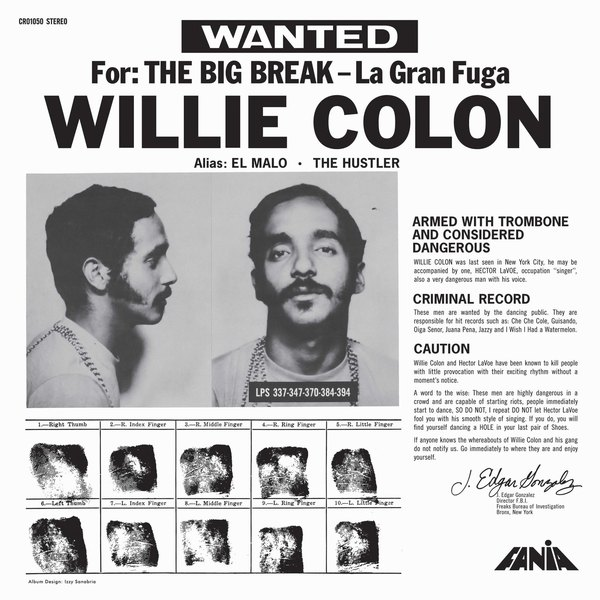
CRVI002622Willie Colón - La Gran Fuga / The Big Break
1971
1971

CRVI000969Popular Brands, Inc. - POP
Trademark · Detergent Preparation for Dish Washing · Pennsylvania · designer unknown · 1937
Trademark · Detergent Preparation for Dish Washing · Pennsylvania · designer unknown · 1937

CRVI002533Mingering Mike - "I'm Superman" b/w "Blind in One Eye"

CRVI000947 - STANZAL
Trademark · owner not established · designer unknown
Trademark · owner not established · designer unknown

CRVI000959Artic Roofings, Inc. - A penguin drawn in shingle facets — the bird for the name and the drawing for the product
Trademark · Composition Shingles and Roll Roofing · Edge Moor · designer unknown · 1939
Trademark · Composition Shingles and Roll Roofing · Edge Moor · designer unknown · 1939

CRVI001009Fairway Foods, Inc. - Radiant Roast
Trademark · Coffee · St. Paul, Minnesota · designer unknown · 1957
Trademark · Coffee · St. Paul, Minnesota · designer unknown · 1957

CRVI002125Jack Whitten - Untitled

CRVI000961 - PHIL-UP
Trademark · owner not established · designer unknown
Trademark · owner not established · designer unknown

CRVI001881Larry Bell - Untitled 2 x 3
2021
2021
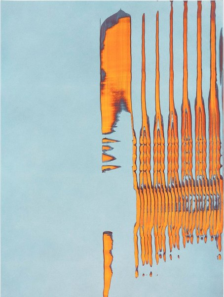
CRVI002318Tauba Auerbach - Grain – Fret – Sublimation
2017
2017
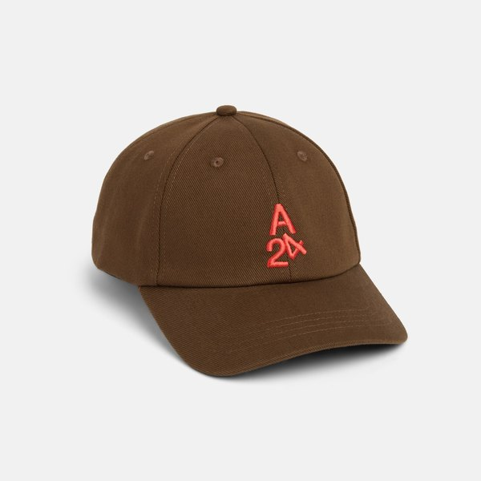
CRVI002430Unattributed - Stacked 'A24' Hat

CRVI000891 - Dressmaker figure — thimble head, scissors, needle and thread
Trademark · owner not established · designer unknown
Trademark · owner not established · designer unknown
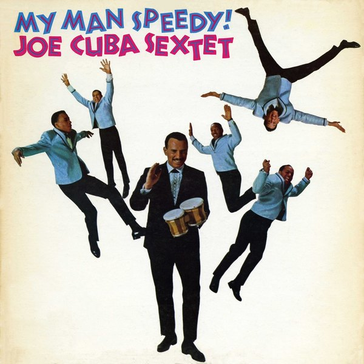
CRVI002586Joe Cuba Sextet - My Man Speedy
1968
1968

CRVI000769Paula Scher - Venus
The Public Theater · 1996
The Public Theater · 1996

CRVI000994 - B H Co
Trademark · owner not established · designer unknown
Trademark · owner not established · designer unknown
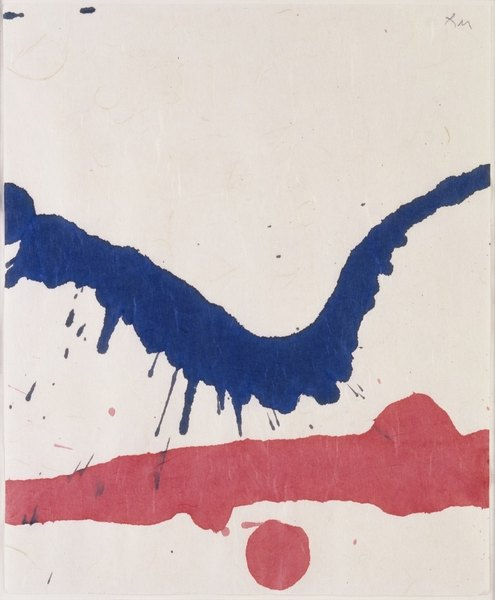
CRVI001520Robert Motherwell - From the Lyric Suite
1965
1965

CRVI000928 - 400
Trademark · owner not established · designer unknown
Trademark · owner not established · designer unknown

CRVI000309Mantronix - The Album
Designer unknown · Sleeping Bag · 1985
Designer unknown · Sleeping Bag · 1985

CRVI000470Unknown - Miracle Worker
Bloomberg Businessweek
Bloomberg Businessweek

CRVI000457Janet Halverson - JFK and LBJ
Cover for Tom Wicker · Pelican
Cover for Tom Wicker · Pelican

CRVI000520Matt Withers - Goldman Sags
The Economist, January 28-February 3, 2023 · 2023
The Economist, January 28-February 3, 2023 · 2023

CRVI000993 - A stippled cloud of smoke driving forward
Trademark · owner not established · designer unknown
Trademark · owner not established · designer unknown

CRVI000962 - A stippled form with a projecting blade
Trademark · owner not established · designer unknown
Trademark · owner not established · designer unknown

CRVI000792Roy Kuhlman - Californians Are Crazy
Esquire article opener · 1953
Esquire article opener · 1953

CRVI001387Whitney Museum of American Art - Annual Exhibition 1960: Contemporary Sculpture and Drawings
Designer unrecorded · Exhibition catalogue · Dec 7, 1960 – Jan 22, 1961 · 1960
Designer unrecorded · Exhibition catalogue · Dec 7, 1960 – Jan 22, 1961 · 1960
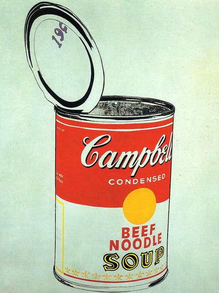
CRVI002256Andy Warhol - Campbell's Soup Can (Beef Noodle)

CRVI000988 - PennCera
Trademark · owner not established · designer unknown
Trademark · owner not established · designer unknown

CRVI001005 - A fist gripping a wave train and firing an arrow
Trademark · owner not established · designer unknown
Trademark · owner not established · designer unknown

CRVI000469Unknown - The U.S. Created PRISM. It Also Created the Antidote
Bloomberg Businessweek
Bloomberg Businessweek
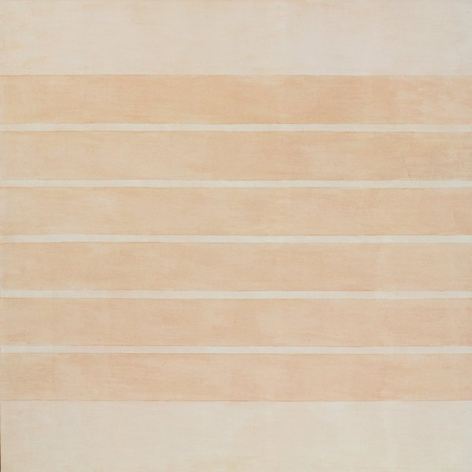
CRVI002274Agnes Martin - Untitled

CRVI000479Martin Schoeller - The Health Issue
New York, July 15-28, 2024 · 2024
New York, July 15-28, 2024 · 2024
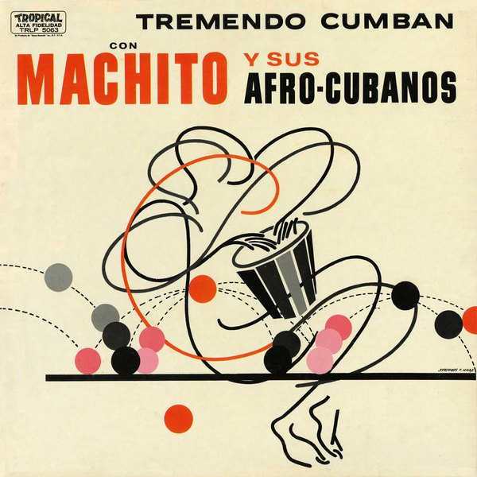
CRVI002598Machito y sus Afro-Cubanos - Tremendo Cumban
1976
1976

CRVI000601Unknown - Replacing the Irreplaceable
New York, October 22, 1979 · 1979
New York, October 22, 1979 · 1979

CRVI000941The Craftsman Press, Inc. - YANKEE
Trademark · Business Forms · Seattle, Washington · designer unknown · 1949
Trademark · Business Forms · Seattle, Washington · designer unknown · 1949

CRVI001144Jackie McLean - It's Time!
Designed by Reid Miles, photograph by Francis Wolff · Blue Note BLP 4179 · 1965
Designed by Reid Miles, photograph by Francis Wolff · Blue Note BLP 4179 · 1965

CRVI000995Hayes Spray Gun Co. - A bug blown backwards by a spray; the only caption on the page
Trademark · Service Kit Comprising Replacement and Repair Parts for Garden Spray Guns · Pasadena, California · designer unknown · 1960
Trademark · Service Kit Comprising Replacement and Repair Parts for Garden Spray Guns · Pasadena, California · designer unknown · 1960

CRVI002611Sounds of Blackness - Africa to America: The Journey of the Drum
1994
1994

CRVI001417William Claxton - Peggy Moffitt in Rudi Gernreich's “little boy” suit

CRVI000571Chris Ware - Ups and Downs
The New Yorker, December 26, 2022 · 2022
The New Yorker, December 26, 2022 · 2022

CRVI000936 - BARACUTA
Trademark · owner not established · designer unknown
Trademark · owner not established · designer unknown

CRVI000606Unknown - Manners for the '80s
New York, December 14, 1987 · 1987
New York, December 14, 1987 · 1987
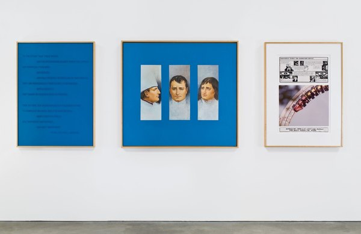
CRVI001904Unidentified - Three framed works, installation view

CRVI000328Stevie Wonder - Signed, Sealed & Delivered I'm Yours
Designer unknown · Motown · 1970
Designer unknown · Motown · 1970

CRVI000785Angelo Testa and Paul Rand - IBM (Furnishing fabric)
Linen · 304.8 × 132.1 cm · late 1950s
Linen · 304.8 × 132.1 cm · late 1950s

CRVI000581Alvin Lustig - Twenty-Third Commencement
Beverly Hills High School · 1940
Beverly Hills High School · 1940

CRVI001314Martin Denny - Latin Village
Designed by Studio Five · Liberty LRP-3378 · 1964
Designed by Studio Five · Liberty LRP-3378 · 1964
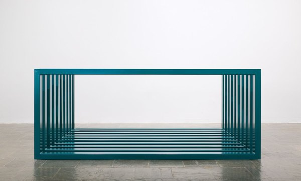
CRVI001865Donald Judd - Untitled
1966
1966
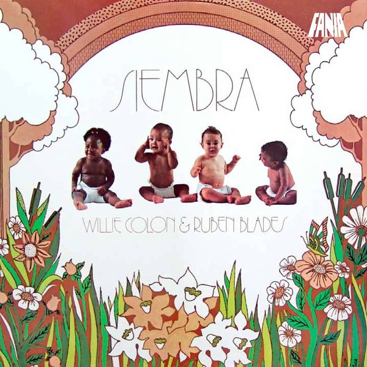
CRVI002471Willie Colón and Rubén Blades - Siembra
1978
1978
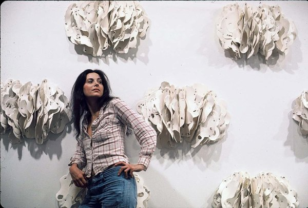
CRVI002136Hannah Wilke - Art for Life's Sake

CRVI001177Wayne Shorter - Et Cetera
Designed by Bill Burks, photograph by Don Peterson · Blue Note LT-1056 · 1980
Designed by Bill Burks, photograph by Don Peterson · Blue Note LT-1056 · 1980

CRVI000343Walter Jackson - It's All Over
Designer unknown · Okeh · 1965
Designer unknown · Okeh · 1965

CRVI001386Whitney Museum of American Art - Annual Exhibition 1962: Contemporary Sculpture and Drawings
Designer unrecorded · Exhibition catalogue · Dec 12, 1962 – Feb 3, 1963 · 1962
Designer unrecorded · Exhibition catalogue · Dec 12, 1962 – Feb 3, 1963 · 1962

CRVI000554Thomas Alberty - She Has Her Mother's Eyes. And Agent.
New York, December 19, 2022 · 2022
New York, December 19, 2022 · 2022

CRVI001138Herbie Hancock - Takin' Off
Designed by Reid Miles · Blue Note BLP 4109 · 1962
Designed by Reid Miles · Blue Note BLP 4109 · 1962

CRVI000960Milwaukee Grains & Feed Co. - $
Trademark · Horse and Dairy Feeds · Milwaukee, Wisconsin · designer unknown · 1928
Trademark · Horse and Dairy Feeds · Milwaukee, Wisconsin · designer unknown · 1928

CRVI000864Julian Stanczak - Airy
1973 · 1973
1973 · 1973

CRVI000508Raul Aguila - Wild About Harry
Variety, December 2, 2020 · 2020
Variety, December 2, 2020 · 2020

CRVI000946Bark Dog Food Company - BARK
Trademark · Dog Meal · Midland, Michigan · designer unknown · 1950
Trademark · Dog Meal · Midland, Michigan · designer unknown · 1950

CRVI000949Nutrition Square, Inc. - NUTRITION SQUARE
Trademark · Pittsburgh, Pennsylvania · designer unknown · 1956
Trademark · Pittsburgh, Pennsylvania · designer unknown · 1956

CRVI000592Unknown - Can Anybody Handle the Soaring Costs of Private Schools?
New York, March 29, 1971 · 1971
New York, March 29, 1971 · 1971

CRVI001168Musical Youth - Pass The Dutchie
Designer unrecorded · MCA Records YOU 1 · 1982
Designer unrecorded · MCA Records YOU 1 · 1982
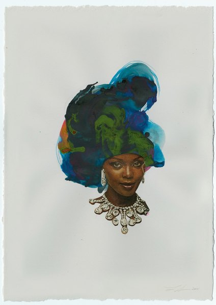
CRVI001971Lorna Simpson - Collage with ink-wash hair

CRVI000359The Staple Singers - Let's Do It Again (Original Soundtrack)
Designer unknown · Curtom · 1975
Designer unknown · Curtom · 1975
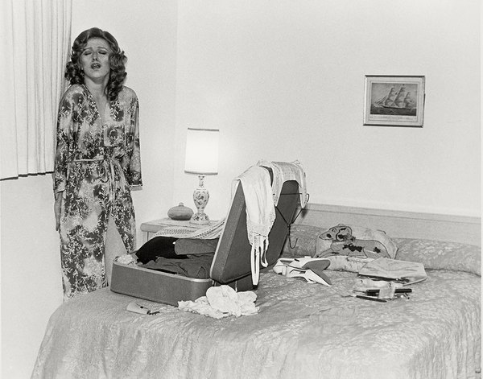
CRVI002289Cindy Sherman - Untitled Film Still #12
1977
1977

CRVI000540QuickHoney - Can I SPAC My Stonks With NFTs?
New York, April 12- 25, 2021 · 2021
New York, April 12- 25, 2021 · 2021

CRVI000898 - K
Trademark · owner not established · designer unknown
Trademark · owner not established · designer unknown

CRVI000923 - GINET
Trademark · owner not established · designer unknown
Trademark · owner not established · designer unknown

CRVI000980 - KLIX
Trademark · owner not established · designer unknown
Trademark · owner not established · designer unknown

CRVI000908Capitol Records, Inc. - The Capitol dome in a starburst; the only caption on the page
Trademark · Grooved Phonograph Records · Los Angeles, California · designer unknown · 1949
Trademark · Grooved Phonograph Records · Los Angeles, California · designer unknown · 1949

CRVI000987General Mills, Inc. - Torpedo
Trademark · Electrical Flashlights · Minneapolis, Minnesota · designer unknown · 1938
Trademark · Electrical Flashlights · Minneapolis, Minnesota · designer unknown · 1938

CRVI002215Piet Mondrian - Composition No. 10
1942
1942

CRVI000975 - Get Happy!
Trademark · owner not established · designer unknown
Trademark · owner not established · designer unknown

CRVI000876John Provencher - Tracing Nature’s DNA
Bloomberg Businessweek, October 2023 · pages 48–49 · 2023
Bloomberg Businessweek, October 2023 · pages 48–49 · 2023

CRVI000979The Waterbury Button Co. - WAZZOO
Trademark · Novelty Humming Musical Instruments · Waterbury, Connecticut · designer unknown · 1936
Trademark · Novelty Humming Musical Instruments · Waterbury, Connecticut · designer unknown · 1936

CRVI000829Seymour Chwast - Freud
Union Camp Paper · 64 × 89 cm
Union Camp Paper · 64 × 89 cm

CRVI000558Ricardo Rey - The Fed That Failed
The Economist, April 23-29, 2022 · 2022
The Economist, April 23-29, 2022 · 2022
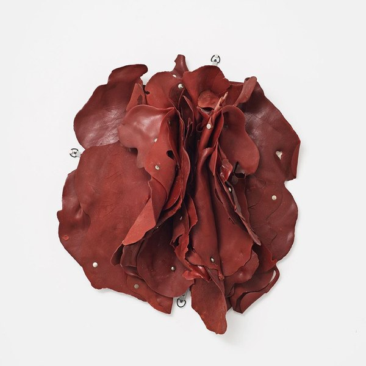
CRVI002135Hannah Wilke - Untitled

CRVI001960Julie Mehretu - Stadia III
2004
2004

CRVI000670Gail Bichler, Matt Dorfman - Boeing
The New York Times Magazine, September 22, 2019 · 2019
The New York Times Magazine, September 22, 2019 · 2019
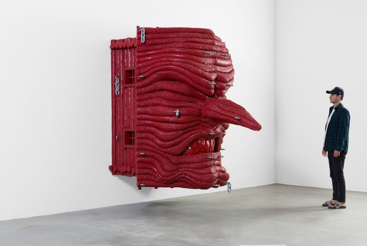
CRVI002072Jordan Wolfson - Untitled

CRVI000423Har-You Percussion Group - The Har-You Percussion Group
Designer unknown · ESP Disk · 1969
Designer unknown · ESP Disk · 1969
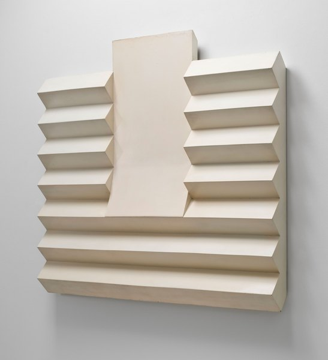
CRVI001903Unidentified - White stepped relief

CRVI000886Ferno Manufacturing Company - ONE MAN
Trademark · Ambulance Cots and Morticians' Carts · Circleville, Ohio · designer unknown · 1957
Trademark · Ambulance Cots and Morticians' Carts · Circleville, Ohio · designer unknown · 1957

CRVI000991Esquire, Inc. - The bald, moustached, goggle-eyed head is Esky, Esquire's mascot
Trademark · Publication Issued Monthly and for a Column in a Newspaper Issued Weekly · Chicago, Illinois · designer unknown · 1935
Trademark · Publication Issued Monthly and for a Column in a Newspaper Issued Weekly · Chicago, Illinois · designer unknown · 1935

CRVI000657David Parkins - The Surprising Sophistication of Twitter
Bloomberg Businessweek, November 11–17 2013 · 2013
Bloomberg Businessweek, November 11–17 2013 · 2013
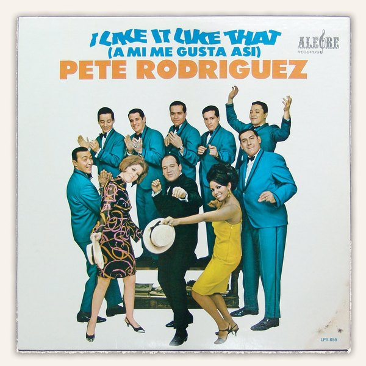
CRVI002394Pete Rodríguez - I Like It Like That (A Mi Me Gusta Así)
1967
1967

CRVI000795Hannah Wilke - S.O.S. Starification Object Series (Curlers)
Gelatin silver print · 101.6 × 68.6 cm · 1974
Gelatin silver print · 101.6 × 68.6 cm · 1974
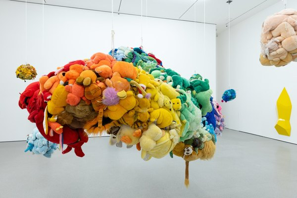
CRVI002141Mike Kelley - Untitled
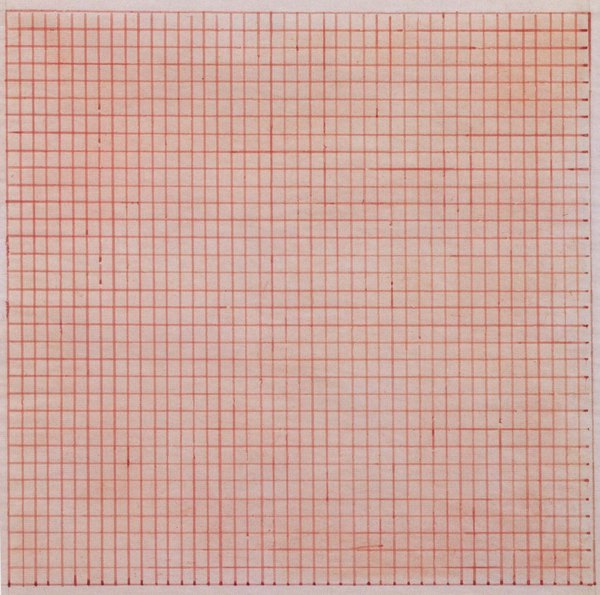
CRVI001874Agnes Martin - Untitled
1963
1963

CRVI001058Rick Valicenti - Show Boat — Lyric Opera of Chicago
Poster
Poster

CRVI000902Manson Laboratories, Inc. - manson
Trademark · Devices to Measure Frequencies · Stamford, Connecticut · designer unknown · 1957
Trademark · Devices to Measure Frequencies · Stamford, Connecticut · designer unknown · 1957

CRVI001804Roy Lichtenstein - Alka Seltzer
1966
1966
CRVI001866Donald Judd - Untitled
1969
1969

CRVI000919 - PACE
Trademark · owner not established · designer unknown
Trademark · owner not established · designer unknown
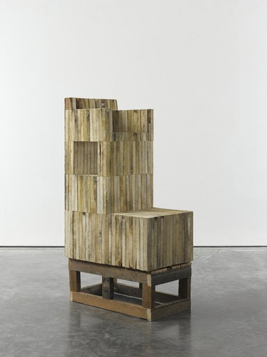
CRVI001962Theaster Gates - Standing Throne 4
2012
2012
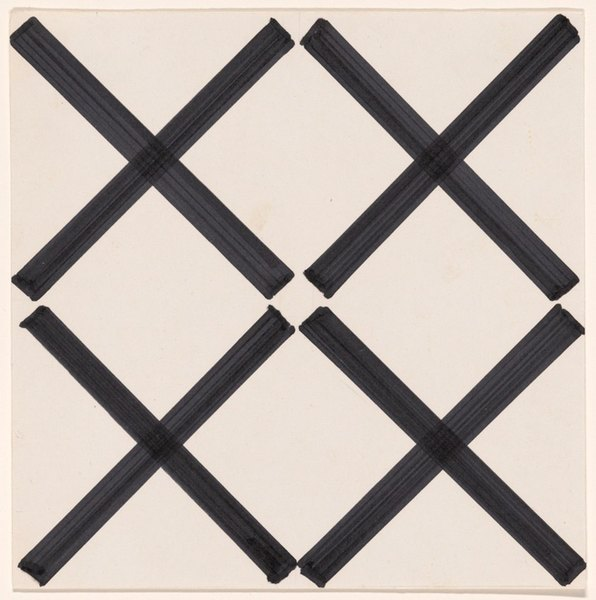
CRVI001905Robert Barry - Untitled
1965
1965

CRVI000151Charles Mingus - The Clown
Designed by Marvin Israel · Atlantic 1260 · 1957
Designed by Marvin Israel · Atlantic 1260 · 1957

CRVI000607Unknown - Spying on Spy
New York, April 17, 1989 · 1989
New York, April 17, 1989 · 1989

CRVI000588Unknown - The Men of Women's Liberation Have Learned Not to Laugh
New York, May 18, 1970 · 1970
New York, May 18, 1970 · 1970
CRVI002464Eric Yahnker - The Delivery of St. Teresa
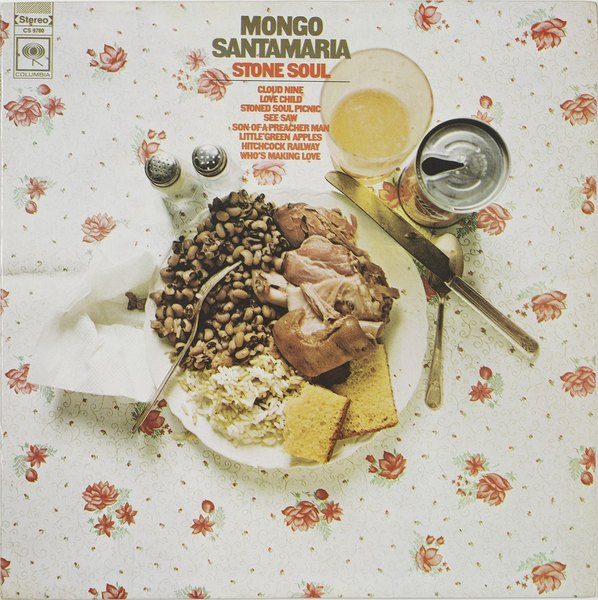
CRVI002481Mongo Santamaría - Stone Soul
1969
1969

CRVI000907Robert Gair Company - GAIR
Trademark · Folding Paperboard Cartons and Corrugated Fibreboard Shipping Boxes · New York, New York · designer unknown · 1947
Trademark · Folding Paperboard Cartons and Corrugated Fibreboard Shipping Boxes · New York, New York · designer unknown · 1947

CRVI000958Nitrate Agencies Co. - GENUINE PERUVIAN GUANO
Trademark · Fertilizer · New York, New York · designer unknown · 1925
Trademark · Fertilizer · New York, New York · designer unknown · 1925

CRVI000541Agnethe Glatved - Current Mood: Resilient
Parents, March 2021 · 2021
Parents, March 2021 · 2021

CRVI000897Braunstein Freres, Inc. - The bearded zouave smoking — the Zig-Zag figure, paired with the ZIG-ZAG wordmark on the facing frame
Trademark · Cigarette Paper · New York, New York · designer unknown · 1953
Trademark · Cigarette Paper · New York, New York · designer unknown · 1953

CRVI000977 - ZEPHYR
Trademark · owner not established · designer unknown
Trademark · owner not established · designer unknown

CRVI001293The Red Garland Quintet - All Mornin' Long
Designed by Esmond Edwards · Prestige 7130 · 1958
Designed by Esmond Edwards · Prestige 7130 · 1958

CRVI002037Tauba Auerbach - Installation view, STANDARD (OSLO)
2020
2020
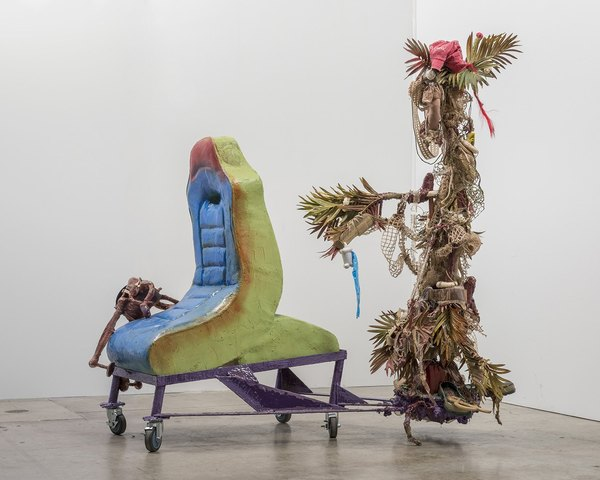
CRVI002079Lizzie Fitch and Ryan Trecartin - Game Ampersand
2015
2015

CRVI000548Nia Lawrence - Rihanna + Lorna Simpson
ESSENCE, January/February 2021 · 2021
ESSENCE, January/February 2021 · 2021
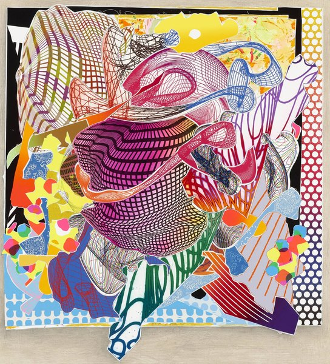
CRVI002277Frank Stella - Feneralia, from Imaginary Places

CRVI000880Sleepwear, Inc. - RESTWELL
Trademark · Pajamas · New York, New York · designer unknown · 1947
Trademark · Pajamas · New York, New York · designer unknown · 1947

CRVI000895 - Q-MAN
Trademark · owner not established · designer unknown
Trademark · owner not established · designer unknown

CRVI000818Seymour Chwast - The South, PPG #54
Push Pin Graphic #54 · 21.6 × 21.6 cm · 1969
Push Pin Graphic #54 · 21.6 × 21.6 cm · 1969

CRVI000927 - M
Trademark · owner not established · designer unknown
Trademark · owner not established · designer unknown
CRVI002590Johnny Pacheco - El Maestro
1975
1975

CRVI000677Tom Alberty, Eva O'Leary - What Instagram Did to Me
New York, September 16-29, 2019 · 2019
New York, September 16-29, 2019 · 2019

CRVI002550Bo Diddley - Bo Diddley
1958
1958

CRVI000906 - G
Trademark · owner not established · designer unknown
Trademark · owner not established · designer unknown

CRVI001583Ralston Crawford - Overseas Highway

CRVI000242Shazz - Shazz
Designer unknown · Columbia · 1998
Designer unknown · Columbia · 1998

CRVI000376AMM - AMMMusic
Designed by Keith Rowe · Elektra · 1967
Designed by Keith Rowe · Elektra · 1967
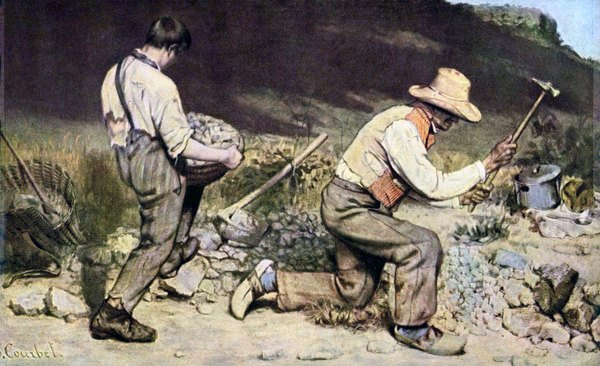
CRVI002369Dick Higgins - Symphony #269 from The Thousand Symphonies
1968
1968
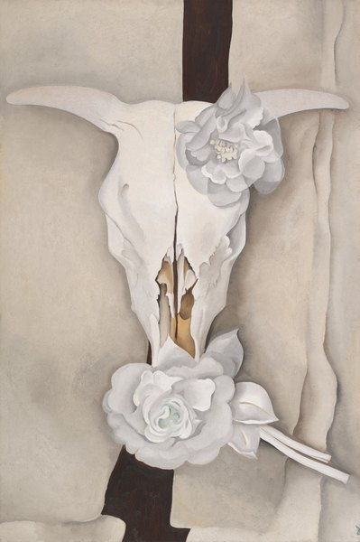
CRVI001580Georgia O'Keeffe - Cow's Skull with Calico Roses
1931
1931
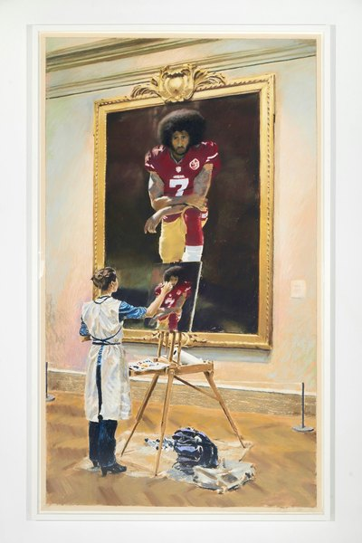
CRVI002462Eric Yahnker - A painter copying a portrait of Colin Kaepernick

CRVI000912 - A shaft carrying two rings
Trademark · owner not established · designer unknown
Trademark · owner not established · designer unknown
CRVI002340Paul McCarthy - White Snow, wood sculpture

CRVI000896Braunstein Freres, Inc. - ZIG-ZAG
Trademark · Cigarette Paper · New York, New York · designer unknown · 1953
Trademark · Cigarette Paper · New York, New York · designer unknown · 1953

CRVI000467Unknown - Transition Game
Bloomberg Businessweek
Bloomberg Businessweek

CRVI001157John Coltrane, Frank Wess, Paul Quinichette - Wheelin' & Dealin'
Designed by Esmond Edwards · Prestige PRLP 7131 · 1958
Designed by Esmond Edwards · Prestige PRLP 7131 · 1958

CRVI000605Unknown - What Would Freud Think?
New York, March 31, 1986 · 1986
New York, March 31, 1986 · 1986

CRVI001416Paul Bacon, Ken Braren and Harris Lewine - The Unique Thelonious Monk
Album cover · Riverside RLP 12-209 · 1958
Album cover · Riverside RLP 12-209 · 1958

CRVI000953Standard Products Co. - 3 JOHNS
Trademark · Whiskey · Chicago, Illinois · designer unknown · 1934
Trademark · Whiskey · Chicago, Illinois · designer unknown · 1934
CRVI002071Jordan Wolfson - Coloured sculpture
2016
2016

CRVI000942Pioneer Equipment Sales Company - PHONE MATE
Trademark · Telephone Accessories · Pasadena, California · designer unknown · 1955
Trademark · Telephone Accessories · Pasadena, California · designer unknown · 1955

CRVI000888Sterling Bolt Company - Running figure shouldering a giant bolt; the only caption on the page
Trademark · Bolts, Nuts, Screws and Rivets · Chicago, Illinois · designer unknown · 1949
Trademark · Bolts, Nuts, Screws and Rivets · Chicago, Illinois · designer unknown · 1949
CRVI002577Howlin' Wolf - Moanin' in the Moonlight
1959
1959

CRVI001013Huntington Mechanical Laboratories, Inc. - H
Trademark · Construction Services · Mountain View, California · designer unknown · 1974
Trademark · Construction Services · Mountain View, California · designer unknown · 1974

CRVI000783Paul Rand - No Way Out
Twentieth Century-Fox · 1950
Twentieth Century-Fox · 1950

CRVI001002 - Keystone
Trademark · owner not established · designer unknown
Trademark · owner not established · designer unknown

CRVI001120Bobby Hutcherson - Stick-Up!
Designed by Reid Miles, photograph by Francis Wolff · Blue Note BST 84244 · 1968
Designed by Reid Miles, photograph by Francis Wolff · Blue Note BST 84244 · 1968

CRVI000982 - D / FR
Trademark · owner not established · designer unknown
Trademark · owner not established · designer unknown
CRVI002324Ed Ruscha - Standard Station
CRVI001523Joan Mitchell - Untitled
1950
1950

CRVI000573Alvin Lustig - Three Lives
Gertrude Stein · New Directions, New Classics NC3 · 1945
Gertrude Stein · New Directions, New Classics NC3 · 1945

CRVI002526Mingering Mike - 3 Footsteps Away from the Altar
CRVI002609Willie Colón and Rubén Blades - Siembra
1978
1978
CRVI001858Nam June Paik - Robot with television screens
CRVI001407Duane Hanson - Man on a Bench
Duane Hanson ·
Duane Hanson ·

CRVI000905Ultra Slide Fastener Corporation - ULTRA
Trademark · Separable Fasteners of the Slider-Controlled Type · New York, New York · designer unknown · 1947
Trademark · Separable Fasteners of the Slider-Controlled Type · New York, New York · designer unknown · 1947

CRVI000918 - E
Trademark · owner not established · designer unknown
Trademark · owner not established · designer unknown
CRVI002570Héctor Lavoe - Comedia
1978
1978

CRVI000611Unknown - Suddenly, Everything Is Stainless Steel.
New York, October 14, 1996 · 1996
New York, October 14, 1996 · 1996
CRVI002151Louise Lawler - Life After 1945 (distorted)

CRVI001907Mel Bochner - Portrait of Eva Hesse
1966
1966
CRVI002321Tauba Auerbach - [2,3]

CRVI001011The Wool Bureau, Inc. - The Woolmark — three interlocking skeins
Trademark · Products Made Wholly or Predominantly of Wool · New York, New York · designer unknown · 1964
Trademark · Products Made Wholly or Predominantly of Wool · New York, New York · designer unknown · 1964

CRVI001270Grachan Moncur III - Some Other Stuff
Designed by Reid Miles · Blue Note 4177 · 1965
Designed by Reid Miles · Blue Note 4177 · 1965

CRVI000999 - A figure playing an accordion, its head a ribbed fan
Trademark · owner not established · designer unknown
Trademark · owner not established · designer unknown

CRVI000978The Darrow Co. - Sta-Glo
Trademark · Varnish and Varnish Extender · Tulsa, Oklahoma · designer unknown · 1936
Trademark · Varnish and Varnish Extender · Tulsa, Oklahoma · designer unknown · 1936

CRVI000294Dick Hyman & Mary Mayo - Moon Gas
Designer unknown · MGM Records · 1963
Designer unknown · MGM Records · 1963

CRVI000542Nathalie Kirsheh - The Best of Global Beauty
Allure, May 2021 · 2021
Allure, May 2021 · 2021

CRVI001717Albert Bloch - Prof. Wayupski's Aerial Stunts
Comic strip
Comic strip

CRVI001279Stan Getz - Long Island Sound
Designer unrecorded · New Jazz 8214 · 1959
Designer unrecorded · New Jazz 8214 · 1959

CRVI000420Leaders Of The New School - A Future Without A Past...
Designer unknown · Elektra · 1991
Designer unknown · Elektra · 1991

CRVI001260John Coltrane - Coltrane's Sound
Designed by Marvin Israel · Atlantic 1419 · 1964
Designed by Marvin Israel · Atlantic 1419 · 1964

CRVI001267Horace Parlan Quintet - Speakin' My Piece
Designed by Reid Miles, photograph by Francis Wolff · Blue Note 4043 · 1960
Designed by Reid Miles, photograph by Francis Wolff · Blue Note 4043 · 1960

CRVI000883The Cooper Alloy Foundry Company - CA
Trademark · Pipe Fittings and Valves · Hillside, New Jersey · designer unknown · 1950
Trademark · Pipe Fittings and Valves · Hillside, New Jersey · designer unknown · 1950

CRVI000889Winter Brothers Company - Three figures shouldering screw taps; the only caption on the page
Trademark · Taps and Dies · Wrentham, Massachusetts · designer unknown · 1946
Trademark · Taps and Dies · Wrentham, Massachusetts · designer unknown · 1946

CRVI000625Jody Quon, Christopher Anderson - David Letterman Returns
New York, March 6-19, 2017 · 2017
New York, March 6-19, 2017 · 2017

CRVI000945Automotive Products, Inc. - AP
Trademark · Apparatus for Testing and Analyzing Diesel Fuel Pumps · Portland, Oregon · designer unknown · 1956
Trademark · Apparatus for Testing and Analyzing Diesel Fuel Pumps · Portland, Oregon · designer unknown · 1956
CRVI001958Julie Mehretu - Stadia I
2004
2004
CRVI001591John Baeder - Red Stripes
2002
2002
CRVI002332Ed Ruscha - Column with Speed Lines
2003
2003
CRVI001403Duane Hanson - Woman with Dog
Duane Hanson · 1977 · Whitney Museum of American Art · 1977
Duane Hanson · 1977 · Whitney Museum of American Art · 1977

CRVI000931Rotron Manufacturing Company, Inc. - R
Trademark · Electric Switches · Woodstock, New York · designer unknown · 1954
Trademark · Electric Switches · Woodstock, New York · designer unknown · 1954

CRVI000930Kemart Corporation - K
Trademark · Drawing Papers and Illustration Boards · San Francisco, California · designer unknown · 1948
Trademark · Drawing Papers and Illustration Boards · San Francisco, California · designer unknown · 1948
CRVI002148Barbara Kruger - Untitled (You)

CRVI000507Oliver Shaw - The Stupid Issue
VICE, March 2020 · 2020
VICE, March 2020 · 2020

CRVI000589Unknown - Subway Roulette: The Game Is Getting Dangerous
New York, June 15, 1970 · 1970
New York, June 15, 1970 · 1970
CRVI002140Matthew Barney - Untitled

CRVI001145Jackie McLean - Let Freedom Ring
Designed by Reid Miles, photograph by Francis Wolff · Blue Note BLP 4106 · 1963
Designed by Reid Miles, photograph by Francis Wolff · Blue Note BLP 4106 · 1963
CRVI001859Nam June Paik - Magnet TV

CRVI002033Nicole Eisenman - Dark Light
2017
2017

CRVI001303Horace Parlan - Happy Frame Of Mind
Designed by Reid Miles, photograph by Francis Wolff · Blue Note 4134 · 1966
Designed by Reid Miles, photograph by Francis Wolff · Blue Note 4134 · 1966

CRVI001117Andrew Hill - Point Of Departure
Designed by Reid Miles · Blue Note BLP 4167 · 1965
Designed by Reid Miles · Blue Note BLP 4167 · 1965

CRVI000408G.L.O.B.E. & Whiz Kid - Play That Beat Mr. D.J.
Designer unknown · Tommy Boy · 1983
Designer unknown · Tommy Boy · 1983

CRVI000957Hermann Sanders - MOLKUR
Trademark · Lactic Preparation for Use as a General Bodybuilding Tonic · St. Louis, Missouri · designer unknown · 1934
Trademark · Lactic Preparation for Use as a General Bodybuilding Tonic · St. Louis, Missouri · designer unknown · 1934

CRVI000169Chet Baker - Chet Baker & Crew
Designer unknown · Pacific Jazz 1224 · 1956
Designer unknown · Pacific Jazz 1224 · 1956
CRVI002465Eric Yahnker - Balloon Ride

CRVI000990Philomene G. Walsh - ATE e WAYS
Trademark · Sauce for Vegetables, Puddings, Soups and Meats · Chicago, Illinois · designer unknown · 1938
Trademark · Sauce for Vegetables, Puddings, Soups and Meats · Chicago, Illinois · designer unknown · 1938
CRVI001592John Baeder - Red Robin Diner
CRVI002295Jeff Koons - Bear and Policeman
1988
1988

CRVI000494Armando Veve - Sting Theory
The New York Times Magazine, November 17, 2024 · 2024
The New York Times Magazine, November 17, 2024 · 2024

CRVI001808James Rosenquist - Silo
1964
1964

CRVI002532Mingering Mike - The Mingering Mike Show: Live from the Howard Theater

CRVI001367Joe Henderson - In 'n Out
Designed by Reid Miles, photograph by Francis Wolff · Blue Note 4166 · 1965
Designed by Reid Miles, photograph by Francis Wolff · Blue Note 4166 · 1965
CRVI002157William Eggleston - Untitled (yellow building)

CRVI001959Julie Mehretu - Stadia II
2004
2004

CRVI000899 - A head pierced by a lightning bolt
Trademark · owner not established · designer unknown
Trademark · owner not established · designer unknown

CRVI001175Thelonious Monk - Thelonious Alone In San Francisco
Designed by Harris Lewine, Ken Braren, Paul Bacon, photograph by William Claxton · Riverside Records RLP 1158 · 1959
Designed by Harris Lewine, Ken Braren, Paul Bacon, photograph by William Claxton · Riverside Records RLP 1158 · 1959

CRVI000904Nixalite Company of America - Two bristling creatures at a barrier; Nixalite's trade is the spiked barrier itself
Trademark · Bird and Rodent Barrier Structure · Davenport, Iowa · designer unknown · 1956
Trademark · Bird and Rodent Barrier Structure · Davenport, Iowa · designer unknown · 1956

CRVI000882 - Figure with a brush, an arc and an 'H' bucket
Trademark · owner not established · designer unknown
Trademark · owner not established · designer unknown

CRVI001290Webster Young - For Lady
Designed by Reid Miles, photograph by Esmond Edwards · Prestige 7106 · 1957
Designed by Reid Miles, photograph by Esmond Edwards · Prestige 7106 · 1957

CRVI000676Tom Alberty, Bobby Doherty - The Golden Age of Pods
New York, March 18-31, 2019 · 2019
New York, March 18-31, 2019 · 2019

CRVI001902Douglas Huebler - Mediate
1978
1978

CRVI001149Jimmy Smith - A New Sound... A New Star... Jimmy Smith At The Organ Volume 1
Designed by Reid Miles, photograph by Francis Wolff · Blue Note BLP 1512 · 1956
Designed by Reid Miles, photograph by Francis Wolff · Blue Note BLP 1512 · 1956

CRVI001373Max Roach - Max Roach + 4 at Newport
Designed by Emmett McBain · EmArcy 36140 · 1958
Designed by Emmett McBain · EmArcy 36140 · 1958
CRVI002121Alice Neel - The Family (John Gruen, Jane Wilson and Julia)
1970
1970

CRVI002571Willie Colón - Cosa Nuestra
1969
1969

CRVI002620Tito Rodríguez - Un Lugar Bajo El Sol
1969
1969

CRVI000336The Bar-Kays - Soul Finger
Designer unknown · Volt · 1967
Designer unknown · Volt · 1967

CRVI001914James Turrell - Raethro (Red)
1968
1968

CRVI001158John Scofield - Hand Jive
Designed by Mark Larson, photograph by Patti Perret · Blue Note CDP 7243 8 27327 2 3 · 1994
Designed by Mark Larson, photograph by Patti Perret · Blue Note CDP 7243 8 27327 2 3 · 1994

CRVI000482Graeme James - War and AI
The Economist, June 22-28, 2024 · 2024
The Economist, June 22-28, 2024 · 2024

CRVI000580Alvin Lustig - Staff
Look magazine staff publication · cover dated 3·28·44 · 1944–45
Look magazine staff publication · cover dated 3·28·44 · 1944–45

CRVI002331Ed Ruscha - Building under a red sky

CRVI000619Gail Bichler - Is Google Too Powerful?
The New York Times Magazine, February 25 2018 · 2018
The New York Times Magazine, February 25 2018 · 2018

CRVI001809James Rosenquist - Space Dust
1989
1989

CRVI000534D.W. Pine - Delete 'Facebook'?
TIME, October 25-November 1, 2021 · 2021
TIME, October 25-November 1, 2021 · 2021

CRVI000832Seymour Chwast - Cars IV
Lithograph · calendar page · 30 × 48 cm · 1996
Lithograph · calendar page · 30 × 48 cm · 1996

CRVI001900On Kawara - May 20, 1967
Today series · 1967
Today series · 1967

CRVI001897On Kawara - June 19, 1967
Today series, No. 108 · 1967
Today series, No. 108 · 1967

CRVI000791Paul Rand - Direction Magazine exhibition poster
Offset lithograph, 1970 printing of the 1939 design · 91.4 × 61 cm · 1939
Offset lithograph, 1970 printing of the 1939 design · 91.4 × 61 cm · 1939

CRVI000787Paul Rand - Jazzways
A Year Book of Hot Music · 1946
A Year Book of Hot Music · 1946

CRVI000786Paul Rand - Sources and Resources of 20th Century Design
International Design Conference in Aspen · 1966
International Design Conference in Aspen · 1966

CRVI002145Barbara Kruger - Untitled (I shop therefore I am)

CRVI001271Art Blakey & The Jazz Messengers - Indestructible
Designed by Reid Miles, photograph by Francis Wolff · Blue Note 4193 · 1966
Designed by Reid Miles, photograph by Francis Wolff · Blue Note 4193 · 1966

CRVI001199The Last Poets - This Is Madness
Painting by Mati Klarwein · Douglas 7 · 1971
Painting by Mati Klarwein · Douglas 7 · 1971

CRVI002247Mark Rothko - Untitled

CRVI000576Alvin Lustig - Illuminations
Arthur Rimbaud · New Directions, New Classics NC14 · 1945
Arthur Rimbaud · New Directions, New Classics NC14 · 1945

CRVI000575Alvin Lustig - Selected Poems
Ezra Pound · New Directions, New Classics NC22 · 1949
Ezra Pound · New Directions, New Classics NC22 · 1949

CRVI000853Richard Turley - [MTV ident — Zen Jen]
MTV ident · animated
MTV ident · animated

CRVI002583Ismael Rivera y sus Cachimbos - Traigo de Todo
1974
1974

CRVI000630D.W. Pine, Peter Greenwood - Dear Washington, We Need to Rebuild. Can You Get Your Act Together?
TIME, April 10, 2017 · 2017
TIME, April 10, 2017 · 2017

CRVI000550D.W. Pine - Day One.
TIME, February 1-8, 2021 · 2021
TIME, February 1-8, 2021 · 2021

CRVI000875John Provencher - [Bloomberg, weather]
Bloomberg Businessweek
Bloomberg Businessweek

CRVI000713Helado Negro - The Last Sound On Earth
Designed by Robert Beatty · 2025
Designed by Robert Beatty · 2025

CRVI000862Julian Stanczak - Sequential Chroma
Screen print on paper · 76.8 × 65.4 cm · 1978
Screen print on paper · 76.8 × 65.4 cm · 1978

CRVI002563Chuck Berry - Berry Is On Top
1959
1959

CRVI000373Mint Condition - Meant To Be Mint
Designer unknown · Perspective · 1991
Designer unknown · Perspective · 1991

CRVI001810Tom Wesselmann - Still life
1963
1963

CRVI000546Emily Kimbro - The 50 Best BBQ Joints
Texas Monthly, November 2021 · 2021
Texas Monthly, November 2021 · 2021

CRVI000491Matt Huynh - If Trump Wins
The Atlantic, January/February 2024 · 2024
The Atlantic, January/February 2024 · 2024

CRVI002410Peter Max - The American Traveler Spreading Good Times
1976
1976

CRVI002503Milton Glaser - Untitled (mouth with a landscape)

CRVI001976Unidentified - Head against a floral ground

CRVI002147Barbara Kruger - Installation with text

CRVI000632Michael Goesele, Justin Metz - Pop Go the Weasels
Newsweek, November 17, 2017 · 2017
Newsweek, November 17, 2017 · 2017

CRVI000512D.W. Pine - Unprecedented.
TIME, April 24/May 1, 2023 · 2023
TIME, April 24/May 1, 2023 · 2023

CRVI001981Amy Sherald - Woman in a spotted dress

CRVI001931Julian Schnabel - Plate painting

CRVI001798Jasper Johns - Target with Plaster Casts
1955
1955

CRVI000715Hunx And His Punx - Walk Out On This World
Designed by Robert Beatty · 2025
Designed by Robert Beatty · 2025

CRVI002362Amy Sherald - As Soft as She Is…
2022
2022

CRVI001285The Gil Mellé Quartet - Mellé Plays Primitive Modern
Designer unrecorded · Prestige 7040 · 1956
Designer unrecorded · Prestige 7040 · 1956

CRVI001128Donald Byrd - Black Byrd
Artwork by Eileen Anderson, photograph by Art Hanson · Blue Note BN-LA047-F · 1973
Artwork by Eileen Anderson, photograph by Art Hanson · Blue Note BN-LA047-F · 1973

CRVI002556Celia Cruz - Mi Coro

CRVI002529Mingering Mike - From Our Mind to Yours

CRVI002484Ray Barretto - The Other Road
1973
1973

CRVI000545James Van Fleteren - Build a Better Breakfast Sandwich
EatingWell, May 2021 · 2021
EatingWell, May 2021 · 2021

CRVI001216Pharoah Sanders - Karma
Designed by Robert & Barbara Flynn, photograph by Chuck Stewart · Impulse! AS-9181 · 1969
Designed by Robert & Barbara Flynn, photograph by Chuck Stewart · Impulse! AS-9181 · 1969

CRVI000730Robert Beatty - Floodgate Companion
Spread · self-published
Spread · self-published

CRVI002156William Eggleston - Untitled

CRVI000725The Weeknd - Dawn FM
Designed by Robert Beatty · 2022
Designed by Robert Beatty · 2022

CRVI001521Barnett Newman - Onement I
1948
1948

CRVI001793Jules Olitski - Born in Snovsk
1962
1962

CRVI001164Lee Morgan - Cornbread
Designed by Reid Miles, photograph by Francis Wolff · Blue Note BST 84222 · 1967
Designed by Reid Miles, photograph by Francis Wolff · Blue Note BST 84222 · 1967

CRVI000784Ivan Chermayeff - By the Sword Divided
Mobil Masterpiece Theatre · 1986
Mobil Masterpiece Theatre · 1986

CRVI000711Tame Impala - Disciples
Designed by Robert Beatty · 2015
Designed by Robert Beatty · 2015

CRVI000873John Provencher - [On, Clubhouse Paris]
On · Clubhouse Paris
On · Clubhouse Paris

CRVI002405Peter Max - Two seated figures

CRVI002552Celia Cruz and Tito Puente - Alma Con Alma: The Heart & Soul of Celia Cruz & Tito Puente
1970
1970

CRVI001294Gene Ammons' All Stars - The Big Sound
Designer unrecorded · Prestige 7132 · 1958
Designer unrecorded · Prestige 7132 · 1958

CRVI000835Mona Chalabi - Congratulations, You’re A Parent! Here’s $1. Now Take This Quiz…
New York Magazine
New York Magazine

CRVI001532Alexandre Hogue - Crucified Land
1939
1939

CRVI001108Martin Wong - Portrait of Mikey Piñero at Ridge Street and Stanton
Acrylic on canvas, 72 × 72 in · also titled “La Vera de Nuyorico: Miguel Piñero” · 1985
Acrylic on canvas, 72 × 72 in · also titled “La Vera de Nuyorico: Miguel Piñero” · 1985

CRVI002505Milton Glaser - Mahalia Jackson - Easter Sunday - Philharmonic Hall, Lincoln Center
1967
1967

CRVI000187E. McKnight Kauffer - Point Counter Point
Dust jacket for Aldous Huxley's Point Counter Point · The Modern Library, New York · 1942
Dust jacket for Aldous Huxley's Point Counter Point · The Modern Library, New York · 1942

CRVI002246Mark Rothko - Untitled

CRVI002560Charlie Palmieri y Su Orquesta - Vuelve El Gigante
1973
1973

CRVI001132Grant Green - Goin' West
Designer unrecorded · Blue Note BST 84310 · 1969
Designer unrecorded · Blue Note BST 84310 · 1969

CRVI000425Bob Thompson and His Orchestra & Chorus - Just For Kicks
Designer unknown · RCA Victor · 1959
Designer unknown · RCA Victor · 1959

CRVI001142Jackie McLean - Demon's Dance
Designed by Bob Venosa, artwork by Mati Klarwein · Blue Note BST 84345 · 1970
Designed by Bob Venosa, artwork by Mati Klarwein · Blue Note BST 84345 · 1970

CRVI000358Stevie Wonder - Fulfillingness' First Finale
Designer unknown · Tamla · 1974
Designer unknown · Tamla · 1974

CRVI001372Eric Dolphy - Out There
Cover painting by Richard “Prophet” Jennings · New Jazz 8252 · 1960
Cover painting by Richard “Prophet” Jennings · New Jazz 8252 · 1960

CRVI000563Kadir Nelson - High Style
The New Yorker, February 14 and 21, 2022 · 2022
The New Yorker, February 14 and 21, 2022 · 2022
CRVI001830Richard Anuszkiewicz - The Fourth of the Three
1963
1963
CRVI002054John Currin - The Neverending Story
1994
1994

CRVI001806James Rosenquist - Source for President Elect
1961
1961

CRVI002528Mingering Mike - Sittin' at Home with the Lowdown Blues
CRVI001529Jack Levine - The Arrest
1983
1983

CRVI002216Josef Albers - Homage to the Square
CRVI002488Celia Cruz - The Queen of Salsa

CRVI002379Jan Sawka - Jan Sawka: Paintings & Constructions (exhibition poster)
1985
1985

CRVI001306June Christy - Off Beat
Designer unrecorded · Capitol T 1498 · 1960
Designer unrecorded · Capitol T 1498 · 1960

CRVI001107Martin Wong - Psychiatrists Testify: Demon Dogs Drive Man to Murder
Acrylic on canvas, 36 × 48 in · also titled “Demon Dogs Drive Man to Murder” · 1980
Acrylic on canvas, 36 × 48 in · also titled “Demon Dogs Drive Man to Murder” · 1980

CRVI001545Lois Mailou Jones - Composition with African head and figure

CRVI001275Howard McGhee - Howard McGhee
Designed by Paul Bacon · Blue Note 5012 · 1952
Designed by Paul Bacon · Blue Note 5012 · 1952

CRVI001312Martin Denny - Exotica
Photograph by Garrett-Howard · Liberty LRP 3034 · 1957
Photograph by Garrett-Howard · Liberty LRP 3034 · 1957

CRVI000602Unknown - Living With the Computer
New York, January 9, 1984 · 1984
New York, January 9, 1984 · 1984

CRVI000775Brownjohn, Chermayeff & Geismar - That New York
About U.S. — Experimental Typography by American Designers · The Composing Room · 1960
About U.S. — Experimental Typography by American Designers · The Composing Room · 1960
CRVI002477Ralfi Pagán - I Can See
CRVI002478Típica 73 - Típica '73
1972
1972
CRVI002485Fania All-Stars - Lo Que Pide La Gente
1984
1984
CRVI001546Lois Mailou Jones - Woman in a turban with masks

CRVI001310Les Baxter - 'Round The World With Les Baxter
Designer unrecorded · Capitol T 780 · 1957
Designer unrecorded · Capitol T 780 · 1957
CRVI002584Fania All Stars - Fania All Stars Featuring Jan Hammer
1986
1986

CRVI000594Unknown - Money Advisor: How to Borrow Money… Cleverly
New York, January 24, 1972 · 1972
New York, January 24, 1972 · 1972
CRVI002032Nicole Eisenman - Beer garden

CRVI001276Gil Mellé Quintet - New Faces – New Sounds
Designed by Gil Mellé · Blue Note 5020 · 1953
Designed by Gil Mellé · Blue Note 5020 · 1953
CRVI002039Tauba Auerbach - Metamaterial Slice Ray

CRVI000868Julian Stanczak - [Untitled]

CRVI000825Seymour Chwast - Canto XVIII, PPG #52
Push Pin Graphic #52 · 46 × 71 cm · 1967
Push Pin Graphic #52 · 46 × 71 cm · 1967

CRVI000570Gail Bichler - Boxed In
The New York Times Magazine, December 4, 2022 · 2022
The New York Times Magazine, December 4, 2022 · 2022

CRVI000865Julian Stanczak - [Untitled]

CRVI001300Blossom Dearie - Once Upon A Summertime
Designed by Gene Federico · Verve Records MG V-2606 · 1958
Designed by Gene Federico · Verve Records MG V-2606 · 1958

CRVI000524Cian Browne - Taylor Russell
W, January 2023 · 2023
W, January 2023 · 2023

CRVI001206The Jazz Messengers - The Complete Jazz Messengers At The Cafe Bohemia
Designed by Reid Miles, photograph by Francis Wolff · Blue Note · 1956
Designed by Reid Miles, photograph by Francis Wolff · Blue Note · 1956
CRVI002142Sherrie Levine - After Mondrian

CRVI000361Betty Wright - Hard to Stop
Designer unknown · TK · 1973
Designer unknown · TK · 1973
CRVI002059Christina Quarles - Exhibition image
2023
2023

CRVI000782Ivan Chermayeff - Ford Madox Ford’s The Good Soldier
Mobil Masterpiece Theatre · 1983
Mobil Masterpiece Theatre · 1983

CRVI000493Bill Mayer - When Pets Escape: The Great Goldfish Invasion
The New York Times for Kids, January 28, 2024 · 2024
The New York Times for Kids, January 28, 2024 · 2024
CRVI002296Jeff Koons - String of Puppies
1988
1988

CRVI000736Robert Beatty - Untitled
Album cover · artist and title unrecorded · Trendland plate 05
Album cover · artist and title unrecorded · Trendland plate 05

CRVI002276Frank Stella - Untitled
1974
1974
CRVI002128Bruce Nauman - Double Poke in the Eye II
CRVI002368John Currin - Hot Pants
2010
2010

CRVI000861Julian Stanczak - Yellow Filtration
Screenprint · 66 × 66 cm · 1981
Screenprint · 66 × 66 cm · 1981

CRVI000329Marvin Gaye & Tammi Terrell - United
Designer unknown · Tamla · 1967
Designer unknown · Tamla · 1967

CRVI001318Tanya Tucker - TNT
Photograph by Olivier Ferrand · MCA Records AY-1104 · 1978
Photograph by Olivier Ferrand · MCA Records AY-1104 · 1978

CRVI000564Thandiwe Muriu - Global Cool
Virtuoso, September/October 2022 · 2022
Virtuoso, September/October 2022 · 2022

CRVI000716Thee Oh Sees - Joe Westerland
Designed by Robert Beatty · 2025
Designed by Robert Beatty · 2025
CRVI001873Agnes Martin - Untitled (White Flower)
1961
1961

CRVI002053John Currin - The Nursery
1994
1994

CRVI002050John Currin - Untitled
1992
1992
CRVI001440Josh MacPhee - Huelga

CRVI000740Robert Beatty - Untitled
Album cover · artist and title unrecorded · Trendland plate 11
Album cover · artist and title unrecorded · Trendland plate 11
CRVI001538Jean Charlot - Wisdom of the West
Mural · 1967
Mural · 1967
CRVI001919Ana Mendieta - Untitled (Fetish Series, Iowa)
1977
1977

CRVI002581Ismael Rivera - Feliz Navidad
1975
1975

CRVI000816Seymour Chwast - Blues Project
Offset lithograph · 102.2 × 75.2 cm · 1968
Offset lithograph · 102.2 × 75.2 cm · 1968

CRVI001135Grant Green - Sunday Mornin'
Designed by Reid Miles, photograph by Francis Wolff · Blue Note BLP 4099 · 1962
Designed by Reid Miles, photograph by Francis Wolff · Blue Note BLP 4099 · 1962

CRVI000863Julian Stanczak - Sharing in Orange
Acrylic on canvas · 107.3 × 107.3 cm · 1970
Acrylic on canvas · 107.3 × 107.3 cm · 1970

CRVI001504Stanton Macdonald-Wright - Synchromy No. 3
1917
1917

CRVI001072David Rudnick - Artwork for black midi

CRVI002218Josef Albers - Study for Homage to the Square: Deep Tune
1963
1963

CRVI000503Unknown - The Year of the Taco
Texas Monthly, November 2020 · 2020
Texas Monthly, November 2020 · 2020
CRVI002158Nan Goldin - Untitled

CRVI000293Jean-Jacques Perrey - Moog Indigo
Designer unknown · Vanguard · 1970
Designer unknown · Vanguard · 1970
CRVI002124Alma Woodsey Thomas - Untitled

CRVI000150Art Blakey's Jazz Messengers - Art Blakey's Jazz Messengers
Designed by Marvin Israel · Atlantic 1278 · 1957
Designed by Marvin Israel · Atlantic 1278 · 1957
CRVI002616Tito Puente - The Latin World of Tito Puente / El Mundo Latino de Tito Puente
1964
1964

CRVI002567Etta James - At Last!
1960
1960

CRVI000185Ernst Reichl - Ulysses
Dust jacket for James Joyce's Ulysses · Random House, New York · 1934
Dust jacket for James Joyce's Ulysses · Random House, New York · 1934

CRVI001053Yello - Solid Pleasure
Designer unrecorded · Ralph Records YL 8059-L · 1980
Designer unrecorded · Ralph Records YL 8059-L · 1980
CRVI001794Alma Thomas - Wind Dancing with Spring Flowers
CRVI002592Johnny Pacheco - The Artist
1977
1977

CRVI000568Gail Bichler - The New York Issue
The New York Times Magazine, June 5, 2022 · 2022
The New York Times Magazine, June 5, 2022 · 2022

CRVI001831Richard Anuszkiewicz - Grand Treasure
1968
1968
CRVI002275Agnes Martin - Untitled

CRVI000577Alvin Lustig - A Handful of Dust
Evelyn Waugh · New Directions, New Classics NC8 · 1945
Evelyn Waugh · New Directions, New Classics NC8 · 1945
CRVI001539Jacob Lawrence - Bar and Grill
1941
1941

CRVI001274Fats Navarro - Memorial Album
Designed by Paul Bacon · Blue Note 5004 · 1953
Designed by Paul Bacon · Blue Note 5004 · 1953

CRVI000342Major Lance - Um, Um, Um, Um, Um, Um (Seasaint Version)
Designer unknown · Okeh · 1964
Designer unknown · Okeh · 1964

CRVI000732Robert Beatty - Untitled
Album cover · artist and title unrecorded · Trendland plate 01
Album cover · artist and title unrecorded · Trendland plate 01
CRVI002603Orchestra Harlow - Hommy: A Latin Opera
1973
1973

CRVI001401Marvin Israel - Handiwork, from Graphik USA
Marvin Israel · 1968 · screenprint, one from a portfolio of eight · 1968
Marvin Israel · 1968 · screenprint, one from a portfolio of eight · 1968
CRVI001530Unidentified - Woman in a hat with a compact mirror

CRVI000815Seymour Chwast - E Pluribus Bang!
Viking Press · 1970
Viking Press · 1970
CRVI001799Jasper Johns - Dancers on a Plane
CRVI002411Peter Max - One Nation under God—This Is a Blessed Country
1976
1976
CRVI002329Ed Ruscha - Rancho
1968
1968

CRVI002517Unattributed - type talks
CRVI002031Dana Schutz - Sneeze
2002
2002
CRVI001560Dorothea Tanning - Eine Kleine Nachtmusik
1943
1943
CRVI001547Lois Mailou Jones - Moon Masque
1971
1971

CRVI002134Carolee Schneemann - Untitled

CRVI002615Celia Cruz and Tito Puente - Quimbo Quimbumbia
1969
1969

CRVI000228Us3 - Hand On The Torch
Typography by Stylorouge · Blue Note CDP 0777 7 80883 2 5 · 1993
Typography by Stylorouge · Blue Note CDP 0777 7 80883 2 5 · 1993
CRVI002507Milton Glaser - Temple University Music Festival
1975
1975

CRVI000603Unknown - Your Telephone Survival Guide
New York, April 23, 1984 · 1984
New York, April 23, 1984 · 1984
CRVI002614Tito Puente - Exitante Ritmo de Tito Puente
1963
1963

CRVI001584George Ault - Mantel Composition
1929
1929

CRVI001264Paul Chambers Quartet - Bass On Top
Designed by Harold Feinstein, photograph by Francis Wolff · Blue Note 1569 · 1957
Designed by Harold Feinstein, photograph by Francis Wolff · Blue Note 1569 · 1957
CRVI002115Philip Guston - Untitled

CRVI001791Morris Louis - Untitled

CRVI000727Raglani - Husk
Front cover · designed by Robert Beatty
Front cover · designed by Robert Beatty

CRVI000366Dayton - Hot Fun
Designer unknown · Capitol · 1982
Designer unknown · Capitol · 1982

CRVI000298Snakefinger - Chewing Hides The Sound
Designer unknown · Ralph · 1979
Designer unknown · Ralph · 1979

CRVI001302Glen Campbell - Rhinestone Cowboy
Designer unrecorded · Capitol SW-11430 · 1975
Designer unrecorded · Capitol SW-11430 · 1975
CRVI002272Agnes Martin - Buds
1959
1959
CRVI001544Lois Mailou Jones - Textile Design

CRVI001802Andy Warhol - Mao
1972
1972
CRVI001761Josef Albers - Study for Homage to the Square: Departing in Yellow
1964
1964

CRVI000596Unknown - Special 16-Page Section for New York Kids
New York, June 25, 1973 · 1973
New York, June 25, 1973 · 1973
CRVI002217Josef Albers - Homage to the Square
CRVI002461Eric Yahnker - Wrecking Ball
2014
2014
CRVI002273Agnes Martin - Untitled
CRVI001792Kenneth Noland - Drought
1962
1962

CRVI002260Roy Lichtenstein - M-Maybe

CRVI000831Seymour Chwast - I, Claudius
Mobil Masterpiece Theatre · 76 × 118 cm · 1976
Mobil Masterpiece Theatre · 76 × 118 cm · 1976

CRVI000714Robert Beatty - 3 Day Gallon
Ahem Editions print · 2026
Ahem Editions print · 2026
CRVI002596La Lupe - One of a Kind / Única En Su Clase
1977
1977
CRVI002555Celia Cruz and La Sonora Ponceña - La Ceiba
1979
1979

CRVI000834Seymour Chwast - The Left-Handed Designer
Jacket panel · Harry N. Abrams · 1985
Jacket panel · Harry N. Abrams · 1985

CRVI000738Robert Beatty - Untitled
Album cover · artist and title unrecorded · Trendland plate 07
Album cover · artist and title unrecorded · Trendland plate 07

CRVI001133Grant Green - Live At The Lighthouse
Designed by John Van Hamersveld, photograph by Al Vandenberg · Blue Note BN-LA037-G2 · 1972
Designed by John Van Hamersveld, photograph by Al Vandenberg · Blue Note BN-LA037-G2 · 1972

CRVI001307Lee Morgan - Charisma
Designed by Ann Meisel, photograph by Francis Wolff · Blue Note 4312 · 1969
Designed by Ann Meisel, photograph by Francis Wolff · Blue Note 4312 · 1969

CRVI001410Peter Max - The Color Spectrum of America — Many Faiths
Peter Max · 1976 · billboard for the GSA Art-in-Architecture Program · 1976
Peter Max · 1976 · billboard for the GSA Art-in-Architecture Program · 1976

CRVI000609Unknown - First, We Kill All the Computers
New York, July 24, 1995 · 1995
New York, July 24, 1995 · 1995

CRVI000814Seymour Chwast - June 12 March
Mixed media · 46 × 61 cm · 1982
Mixed media · 46 × 61 cm · 1982

CRVI001978Kehinde Wiley - Two women in yellow and pink

CRVI000582Alvin Lustig - World Inventors Exposition
1947
1947
CRVI001409Peter Max - The American Cosmic Jumper in the Land of Rainbows and Stars
Peter Max · 1976 · billboard for the GSA Art-in-Architecture Program · 1976
Peter Max · 1976 · billboard for the GSA Art-in-Architecture Program · 1976

CRVI000417Lakim Shabazz - Pure Righteousness
Designer unknown · Tuff City · 1988
Designer unknown · Tuff City · 1988
CRVI001979Amy Sherald - A Certain Kind of Happiness
2022
2022
CRVI001871Unidentified - Wave composition

CRVI002527Mingering Mike - Sickle Cell Anemia

CRVI002049John Currin - Bea Arthur Naked

CRVI001983Amy Sherald - Woman in a teal dress

CRVI000765Paula Scher - The Diva is Dismissed
Serigraph · 116.8 × 76.5 cm · 1994
Serigraph · 116.8 × 76.5 cm · 1994

CRVI001415Paul Bacon, Ken Braren and Harris Lewine - Everybody Digs Bill Evans
Album cover · Riverside RLP 1129 · 1959
Album cover · Riverside RLP 1129 · 1959

CRVI000126Shigeo Fukuda - The World of Shigeo Fukuda in U.S.A.
M.H. de Young Memorial Museum, San Francisco · Junior Art Center, Los Angeles · Santa Barbara Museum of Art · 1971
M.H. de Young Memorial Museum, San Francisco · Junior Art Center, Los Angeles · Santa Barbara Museum of Art · 1971

CRVI001288Tadd Dameron with John Coltrane - Mating Call
Designed by Esmond Edwards, Tom Hannan · Prestige 7070 · 1957
Designed by Esmond Edwards, Tom Hannan · Prestige 7070 · 1957

CRVI001123Jackie McLean - Jacknife
Designed by Bob Cato, photograph by Raymond Ross · Blue Note BN-LA457-H2 · 1975
Designed by Bob Cato, photograph by Raymond Ross · Blue Note BN-LA457-H2 · 1975
CRVI002408Peter Max - Flowers in the Wind—American Breeze
1976
1976

CRVI000433Neutral Milk Hotel - In The Aeroplane Over The Sea
Designer unknown · MGM Records · 1998
Designer unknown · MGM Records · 1998

CRVI000790Paul Rand - Golden Circle
IBM · Kauai Surf Hotel, Hawaii · 1981
IBM · Kauai Surf Hotel, Hawaii · 1981

CRVI001522Barnett Newman - Yellow Painting
1949
1949

CRVI001162Kenny Dorham - Una Mas
Designed by Reid Miles, photograph by Francis Wolff · Blue Note BLP 4127 · 1963
Designed by Reid Miles, photograph by Francis Wolff · Blue Note BLP 4127 · 1963
CRVI001729Stanton Macdonald-Wright - Still Life with Red Vase Synchromy

CRVI000821Seymour Chwast - Nicholas Nickleby
Mobil Showcase Network · 76 × 118 cm · 1983
Mobil Showcase Network · 76 × 118 cm · 1983
CRVI002319Tauba Auerbach - Marbled composition
CRVI002271Sol LeWitt - Forms Derived from a Cube
CRVI001594Tom Blackwell - Rainbow '74
CRVI002270Sol LeWitt - Bands and arcs of colour
CRVI002213Piet Mondrian - Broadway Boogie Woogie
1943
1943

CRVI001731Arthur Dove - Sun
1943
1943

CRVI001251Howard Wales & Jerry Garcia - Hooteroll?
Painting by Mati Klarwein · Douglas KZ 30859 · 1971
Painting by Mati Klarwein · Douglas KZ 30859 · 1971

CRVI000827Seymour Chwast - A Tribute to Arthur Freed
Gallery of Modern Art, New York · 1967
Gallery of Modern Art, New York · 1967

CRVI001795Alma Thomas - The Eclipse

CRVI001408Peter Max - Different Drummer
Peter Max · 1960s · poster
Peter Max · 1960s · poster

CRVI000585Unknown - The Future of the Democratic Party
New York, November 4, 1968 · 1968
New York, November 4, 1968 · 1968
CRVI002228László Moholy-Nagy - Leuk 5
1946
1946

CRVI000772Erving Goffman - Interaction Ritual
Doubleday Anchor Original A596 · cover signed “Giusti” · 1967
Doubleday Anchor Original A596 · cover signed “Giusti” · 1967

CRVI000768Paula Scher - Blade to the Heat
The Public Theater · 74 × 112 cm · 1994
The Public Theater · 74 × 112 cm · 1994

CRVI000851Richard Turley - I Am My MTV
MTV ident
MTV ident

CRVI001807James Rosenquist - White Bread
1964
1964

CRVI000299The Residents - The Commercial Album
Designer unknown · Ralph · 1980
Designer unknown · Ralph · 1980
CRVI002473Larry Harlow - Yo Soy Latino
1982
1982

CRVI001878Frank Stella - Gran Cairo
1962
1962

CRVI000220James Brown & The Famous Flames - Think!
Designer unknown · King · 1960
Designer unknown · King · 1960
CRVI002259Roy Lichtenstein - Crying Girl
1963
1963

CRVI000473Unknown - Pikettymania
Bloomberg Businessweek, June 2 – June 8, 2014 · 2014
Bloomberg Businessweek, June 2 – June 8, 2014 · 2014

CRVI000296Miles Davis - On The Corner
Designer unknown · Columbia · 1972
Designer unknown · Columbia · 1972

CRVI000553Graeme James - The Horror Ahead
The Economist, March 5-11, 2022 · 2022
The Economist, March 5-11, 2022 · 2022

CRVI000764Paula Scher - The Public Theater, 95–96 Season
Lithograph · 152.4 × 114.3 cm · 1995
Lithograph · 152.4 × 114.3 cm · 1995
CRVI002281John Baldessari - Yellow interior with a red squiggle

CRVI000537Gail Bichler - How America Spends
The New York Times Magazine, May 23, 2021 · 2021
The New York Times Magazine, May 23, 2021 · 2021
CRVI002320Tauba Auerbach - Marbled composition

CRVI000578Alvin Lustig - The Great Gatsby
F. Scott Fitzgerald · New Directions, New Classics NC9 · 1945
F. Scott Fitzgerald · New Directions, New Classics NC9 · 1945

CRVI002263Roy Lichtenstein - Sunrise

CRVI001139The Horace Silver Quintet - Horace-Scope
Artwork by Paula Donohue, photograph by Francis Wolff · Blue Note BLP 4042 · 1960
Artwork by Paula Donohue, photograph by Francis Wolff · Blue Note BLP 4042 · 1960

CRVI000513Oliver Munday - The Choice Is Between Freedom and Fear
The Atlantic, June 2023 · 2023
The Atlantic, June 2023 · 2023
CRVI002214Piet Mondrian - New York City I
1942
1942

CRVI000418De La Soul - 3 Feet High And Rising
Designer unknown · Tommy Boy · 1989
Designer unknown · Tommy Boy · 1989

CRVI000852Richard Turley - No Chill
MTV
MTV

CRVI002153Keith Haring - Untitled (Dance)
1987
1987

CRVI001165Lee Morgan - The Sidewinder
Designed by Reid Miles, photograph by Francis Wolff · Blue Note BLP 4157 · 1964
Designed by Reid Miles, photograph by Francis Wolff · Blue Note BLP 4157 · 1964

CRVI000335Sam & Dave - Hold On, I'm Comin'
Designer unknown · Stax · 1966
Designer unknown · Stax · 1966

CRVI001867Dan Flavin - Untitled

CRVI002152Keith Haring - Untitled
1982
1982

CRVI002261Roy Lichtenstein - Crying Girl
1964
1964

CRVI002531Mingering Mike - Channels of a Dream

CRVI001576Charles Sheeler - The Artist Looks at Nature
1943
1943

CRVI000147The Grassella Oliphant Quartette - The Grass Roots
Designed by Loring Eutemey · 1965
Designed by Loring Eutemey · 1965

CRVI000869John Provencher - The Yellow Wallpaper
A24 Zine, issue 33 · guest-edited by Kane Parsons · 2026
A24 Zine, issue 33 · guest-edited by Kane Parsons · 2026

CRVI001371Steve Lacy - Reflections: Steve Lacy Plays Thelonious Monk
Designer unrecorded · New Jazz 8206 · 1959
Designer unrecorded · New Jazz 8206 · 1959

CRVI000870John Provencher - The Yellow Wallpaper
A24 Zine, issue 33 · inside spread · 2026
A24 Zine, issue 33 · inside spread · 2026

CRVI000574Alvin Lustig - A Room with a View
E M Forster · New Directions, New Classics NC5 · 1943
E M Forster · New Directions, New Classics NC5 · 1943
CRVI002406Peter Max - Right Now
1970
1970

CRVI002223Anni Albers - Pasture
1958
1958

CRVI000484Anna Devís - The Hotel Issue
VIRTUOSO, July/August 2024 · 2024
VIRTUOSO, July/August 2024 · 2024

CRVI000555Gail Bichler - Great Performers: Featuring Michelle Yeoh
The New York Times Magazine, December 11, 2022 · 2022
The New York Times Magazine, December 11, 2022 · 2022

CRVI000766Paula Scher - Him
Screenprint · 116.8 × 76.5 cm · 1994
Screenprint · 116.8 × 76.5 cm · 1994

CRVI000330Marvin Gaye - In The Groove
Designer unknown · Tamla · 1968
Designer unknown · Tamla · 1968

CRVI002117Richard Diebenkorn - Ocean Park #45
1971
1971

CRVI000731Robert Beatty - Untitled
Illustration
Illustration
CRVI001891Joseph Kosuth - Five Words in Green Neon
1965
1965

CRVI000474Unknown - The How-To Issue
Bloomberg Businessweek, April 15 – April 21, 2013 · 2013
Bloomberg Businessweek, April 15 – April 21, 2013 · 2013

CRVI000871John Provencher - Will Larry Ellison Be the Face of the A.I. Bubble?
The New York Times Magazine, August 16, 2026 · 2026
The New York Times Magazine, August 16, 2026 · 2026

CRVI001179Wayne Shorter - Schizophrenia
Photograph by John Zoiner · Blue Note BST 84297 · 1969
Photograph by John Zoiner · Blue Note BST 84297 · 1969

CRVI000773Ivan Chermayeff - Two by Forsyth
Offset lithograph · 117 × 76 cm · 1984
Offset lithograph · 117 × 76 cm · 1984

CRVI000379Quintron - The Frog Tape
Designer unknown · Skin Graft · 2005
Designer unknown · Skin Graft · 2005

CRVI001321Sérgio Mendes - The Swinger From Rio
Designed by Loring Eutemey, photograph by Hideoki · Atlantic 1434 · 1965
Designed by Loring Eutemey, photograph by Hideoki · Atlantic 1434 · 1965

CRVI001295Tommy Flanagan Trio - Overseas
Designed by Esmond Edwards · Prestige 7134 · 1958
Designed by Esmond Edwards · Prestige 7134 · 1958

CRVI000496Chris Nosenzo - Is Google Hurting Small Business?
Bloomberg Businessweek, August 10, 2020 · 2020
Bloomberg Businessweek, August 10, 2020 · 2020

CRVI001111Rudy VanderLans - Emigre No. 5, Edizione Italo-Francese
Magazine cover · 43 × 29.1 cm, 30 pages · Emigre Inc., Berkeley · 1986
Magazine cover · 43 × 29.1 cm, 30 pages · Emigre Inc., Berkeley · 1986

CRVI000817Seymour Chwast - The South, PPG #54
Push Pin Graphic #54 · 21.6 × 21.6 cm · 1969
Push Pin Graphic #54 · 21.6 × 21.6 cm · 1969
CRVI001906Robert Barry - Green panel with white points

CRVI001261Elvin Jones - Midnight Walk
Designed by Marvin Israel, photograph by Lee Tanner · Atlantic 1485 · 1967
Designed by Marvin Israel, photograph by Lee Tanner · Atlantic 1485 · 1967

CRVI001790Barnett Newman - Dionysius
1949
1949

CRVI001320Jutta Hipp - Jutta Hipp With Zoot Sims
Designed by Reid Miles · Blue Note 1530 · 1956
Designed by Reid Miles · Blue Note 1530 · 1956

CRVI000833James McMullan - Head Out to Oz
Push Pin Graphic #52 · 71 × 46 cm · 1967
Push Pin Graphic #52 · 71 × 46 cm · 1967

CRVI000557Somnath Bhatt - The Baristas' Rebellion
Bloomberg Businessweek, May 16, 2022 · 2022
Bloomberg Businessweek, May 16, 2022 · 2022

CRVI000597Unknown - Why Everybody's Talking About Gossip
New York, May 3, 1976 · 1976
New York, May 3, 1976 · 1976

CRVI000729Robert Beatty - Floodgate Companion
Spread · self-published
Spread · self-published

CRVI001315Miles Davis - Bags Groove
Designed by Reid Miles · Prestige 7109 · 1957
Designed by Reid Miles · Prestige 7109 · 1957

CRVI000806Mark Tansey - The Myth of Depth
Detail · oil on canvas, 99 × 226.1 cm · 1984
Detail · oil on canvas, 99 × 226.1 cm · 1984

CRVI000859Julian Stanczak - Conferring Blue
Screenprint · 68.6 × 68.6 cm · 1981
Screenprint · 68.6 × 68.6 cm · 1981

CRVI001980Amy Sherald - Breonna Taylor
2020
2020

CRVI000807Mark Tansey - Study for Action Painting II
Study · oil on canvas · 1985
Study · oil on canvas · 1985

CRVI000539Peter Herbert - Fortune 500
Fortune, June/July 2021 · 2021
Fortune, June/July 2021 · 2021

CRVI001759Josef Albers - Homage to the Square: Apparition
1959
1959

CRVI001277George Wallington And His Band - George Wallington Showcase
Designed by John Hermansader, photograph by Francis Wolff · Blue Note 5045 · 1954
Designed by John Hermansader, photograph by Francis Wolff · Blue Note 5045 · 1954

CRVI002154Keith Haring - Untitled (Tree of figures)

CRVI000824Seymour Chwast - Master & Dog
Push Pin Graphic #57 · 1972
Push Pin Graphic #57 · 1972

CRVI002407Peter Max - Cosmic landscape with crystal peaks
2019
2019

CRVI000828Seymour Chwast - Penny Pitch
68.6 × 53.3 cm · 1967
68.6 × 53.3 cm · 1967

CRVI002030Dana Schutz - Sneeze
2001
2001

CRVI002595La Lupe - La Lupe Es La Reina / The Queen
1969
1969

CRVI002559Charlie Palmieri - El Gigante del Teclado
1973
1973

CRVI002483Ray Barretto - Barretto Power
1970
1970

CRVI002359Amy Sherald - Innocent You, Innocent Me
2016
2016

CRVI001176Tina Brooks - True Blue
Designed by Reid Miles, photograph by Francis Wolff · Blue Note BLP 4041 · 1960
Designed by Reid Miles, photograph by Francis Wolff · Blue Note BLP 4041 · 1960

CRVI002579Orchestra Harlow - Orchestra Harlow Presenta a Ismael Miranda
1968
1968

CRVI002363Amy Sherald - Precious jewels by the sea
2019
2019

CRVI002357Amy Sherald - If You Surrendered to the Air, You Could Ride It
2019
2019

CRVI002052John Currin - The Shaving Man
1993
1993

CRVI000779Folio - Folio 5: CIBA-U.S.A.
Sanders Printing Corporation, New York · c. 1960–65
Sanders Printing Corporation, New York · c. 1960–65

CRVI002502Milton Glaser - Zabriskie Point
1970
1970

CRVI002573Willie Colón - Guisando / Doing a Job
1969
1969

CRVI002358Amy Sherald - The Bathers
2015
2015

CRVI000566Graeme James - The Coming Food Catastrophe
The Economist, May 21-27, 2022 · 2022
The Economist, May 21-27, 2022 · 2022

CRVI001304Horace Parlan - Headin' South
Photograph by Ronnie Brathwaite · Blue Note 4062 · 1960
Photograph by Ronnie Brathwaite · Blue Note 4062 · 1960

CRVI000857Julian Stanczak - Homage
Acrylic on canvas · 1990
Acrylic on canvas · 1990

CRVI000805Mark Tansey - Reverb
Oil on canvas · 213.4 × 152.4 cm · 2017
Oil on canvas · 213.4 × 152.4 cm · 2017

CRVI001215Alice Coltrane With Strings - World Galaxy
Designed by Peter Max, photograph by Philip Melnick · Impulse! AS-9218 · 1972
Designed by Peter Max, photograph by Philip Melnick · Impulse! AS-9218 · 1972

CRVI002562Various Artists - Super Salsa Singers Volume I
1977
1977

CRVI001155John Coltrane - Infinity
Designed by Richard Taylor, photograph by Chester Sheard · Impulse! AS-9225 · 1972
Designed by Richard Taylor, photograph by Chester Sheard · Impulse! AS-9225 · 1972

CRVI001301Bobbie Gentry - Touch 'Em With Love
Designer unrecorded · Capitol ST-234 · 1969
Designer unrecorded · Capitol ST-234 · 1969

CRVI001134Grant Green - Street Of Dreams
Designed by Reid Miles, photograph by Jim Marshall · Blue Note BST 84253 · 1967
Designed by Reid Miles, photograph by Jim Marshall · Blue Note BST 84253 · 1967

CRVI000352Earth, Wind & Fire - AIl 'N' AIl
Designer unknown · Columbia · 1977
Designer unknown · Columbia · 1977

CRVI001369Miles Davis - Blue Haze
Designed by Tom Hannan · Prestige 7054 · 1956
Designed by Tom Hannan · Prestige 7054 · 1956

CRVI002360Amy Sherald - Miss Everything (Unsuppressed Deliverance)
2013
2013

CRVI002591Johnny Pacheco - Once Upon a Time / Había Una Vez
1970
1970

CRVI001178Wayne Shorter - JuJu
Designed by Reid Miles · Blue Note BLP 4182 · 1965
Designed by Reid Miles · Blue Note BLP 4182 · 1965

CRVI000489R. Kikuo Johnson - The Robots Are Coming
MIT Technology Review, May/June 2024 · 2024
MIT Technology Review, May/June 2024 · 2024

CRVI001141Jackie McLean - Bluesnik
Designed by Reid Miles, photograph by Francis Wolff · Blue Note BLP 4067 · 1962
Designed by Reid Miles, photograph by Francis Wolff · Blue Note BLP 4067 · 1962

CRVI001760Josef Albers - Study for Homage to the Square: Beaming
1963
1963

CRVI002143Richard Prince - Untitled (Cowboy)
1989
1989

CRVI001159Kenny Burrell - Blue Lights, Volumes 1 & 2
Designed by Reid Miles, artwork by Andy Warhol · Blue Note BLP 1596 · 1958
Designed by Reid Miles, artwork by Andy Warhol · Blue Note BLP 1596 · 1958

CRVI000435Sufjan Stevens - Illinois
Designer unknown · Asthmatic Kitty · 2005
Designer unknown · Asthmatic Kitty · 2005

CRVI000178Sonny Rollins - Sonny Rollins
Designed by Bob Weinstock · Prestige LP 7029 · 1953
Designed by Bob Weinstock · Prestige LP 7029 · 1953
CRVI002398Ray Barretto con Adalberto Santiago - Rican/Struction
1979
1979
CRVI001992Tschabalala Self - Two Headed
2023
2023

CRVI001059Ingo Swann - Cosmic painting

CRVI000809Mark Tansey - Xing
Oil on canvas · 223.5 × 152.4 cm · 2021
Oil on canvas · 223.5 × 152.4 cm · 2021
CRVI001957Kerry James Marshall - Vignette 13
2008
2008
CRVI001587Richard Estes - Car with reflected buildings

CRVI002601Muddy Waters - The London Muddy Waters Sessions
1972
1972
CRVI001963Mark Bradford - Untitled (detail)
CRVI001411Robert Rauschenberg - Banner (Stoned Moon)
Robert Rauschenberg · 1969 · lithograph, Gemini G.E.L. · 1969
Robert Rauschenberg · 1969 · lithograph, Gemini G.E.L. · 1969

CRVI000647Françoise Mouly, Kadir Nelson - 90th Anniversary [Eustace Tilley]
The New Yorker, February 23 2015 · 2015
The New Yorker, February 23 2015 · 2015
CRVI001967Ligel Lambert - Portrait of Glenn Ligon

CRVI000477Justin Metz - The Centre Cannot Hold
The Economist, June 29-July 5, 2024 · 2024
The Economist, June 29-July 5, 2024 · 2024

CRVI001160Kenny Burrell - Midnight Blue
Designed by Reid Miles, photograph by Francis Wolff · Blue Note BLP 4123 · 1963
Designed by Reid Miles, photograph by Francis Wolff · Blue Note BLP 4123 · 1963

CRVI000826Seymour Chwast - The Nose #11, Tricks
The Nose · 18 × 28 cm · 2005
The Nose · 18 × 28 cm · 2005

CRVI002599Johnny Pacheco and Melón - Flying High
1983
1983

CRVI001882Larry Bell - Glass installation

CRVI000712Tame Impala - Eventually
Designed by Robert Beatty · 2015
Designed by Robert Beatty · 2015

CRVI002123Faith Ringgold - Dancing on the George Washington Bridge
CRVI001974Kehinde Wiley - Portrait of Jorge Gitoo Wright

CRVI000421The UMC's - Fruits Of Nature
Designer unknown · Wild Pitch · 1991
Designer unknown · Wild Pitch · 1991
CRVI002605Johnny Pacheco - Volando Bajito
1968
1968
CRVI001796Alma Thomas - Starry Night and the Astronauts
1972
1972

CRVI000678Gail Bichler, Kathy Ryan, Maurizio Cattelan, Pierpaolo Ferrari - The Tech & Design Issue
The New York Times Magazine, November 17, 2019 · 2019
The New York Times Magazine, November 17, 2019 · 2019

CRVI001069David Rudnick - Poster for Making Time
Poster · Philadelphia
Poster · Philadelphia

CRVI000424Lee Hazlewood - Love and Other Crimes
Designer unknown · Reprise Records · 1968
Designer unknown · Reprise Records · 1968

CRVI000598Unknown - We Have Seen the Future and It's New Jersey
New York, June 20, 1977 · 1977
New York, June 20, 1977 · 1977

CRVI002524Mingering Mike - Slow 'n' Easy

CRVI001363Andrew Kuo - Decoding a Trickster — Aphex Twin, 'Syro'
Chart for The New York Times · 2014-09-28 · 2014
Chart for The New York Times · 2014-09-28 · 2014

CRVI001065Lezley Saar - Cell Realization

CRVI000813Mark Tansey - Revelever
Oil on canvas
Oil on canvas
CRVI002600Bo Diddley, Muddy Waters and Little Walter - Super Blues
1967
1967

CRVI001229Pharoah Sanders - Elevation
Designed by Tim Bryant, artwork by Bodhi Wind · Impulse! AS-9261 · 1974
Designed by Tim Bryant, artwork by Bodhi Wind · Impulse! AS-9261 · 1974
CRVI002116Ellsworth Kelly - Blue on White
1961
1961

CRVI000561Marshall Mckinney - Saving the Wild South
Garden & Gun, October/November 2022 · 2022
Garden & Gun, October/November 2022 · 2022

CRVI002280John Baldessari - Three figures with a framed painting
CRVI002589Celia Cruz and Johnny Pacheco - Celia & Johnny
1974
1974

CRVI000478Tim O'Brien - American Oligarchy
Mother Jones, January + February 2024 · 2024
Mother Jones, January + February 2024 · 2024
CRVI001877Frank Stella - Hampton Roads
1961
1961

CRVI000778Paul Rand - Boston: A New National Park
National Park Service · 1975
National Park Service · 1975

CRVI000810Mark Tansey - Invisible Hand
Oil on canvas · 213 × 182.6 cm · 2011
Oil on canvas · 213 × 182.6 cm · 2011

CRVI000811Mark Tansey - Apple Tree
Oil on canvas · 200.7 × 254 cm · Museum of Fine Arts, Houston · 2008–09
Oil on canvas · 200.7 × 254 cm · Museum of Fine Arts, Houston · 2008–09

CRVI000146Bobby Timmons - Soul Time
Designed by Ken Deardoff · 1960
Designed by Ken Deardoff · 1960
CRVI002245Mark Rothko - Untitled
CRVI002554Celia Cruz - Homenaje a los Santos Vol. 2
1965
1965

CRVI000788Paul Rand - Skull and Olive Branch
Vietnam anti-war poster · 1969
Vietnam anti-war poster · 1969

CRVI000399Mr. Fingers - Introduction
Designer unknown · MCA Records · 1992
Designer unknown · MCA Records · 1992

CRVI002330Ed Ruscha - Norm's, La Cienega, on Fire
1964
1964

CRVI000613Ivan Chermayeff, Thomas Geismar - Whitney Museum of American Art, 75th & Madison, Open Free Tuesday Evenings
Lithograph, 116.8 × 76.1 cm · 1977
Lithograph, 116.8 × 76.1 cm · 1977
CRVI001880Larry Bell - Glass installation
CRVI001918James Turrell - Munson (Blue)
CRVI001833Richard Anuszkiewicz - Marriage of Reds and Oranges
1992
1992

CRVI000492Joe Darrow - Sign Here, My Stallion
New York, July 1-14, 2024 · 2024
New York, July 1-14, 2024 · 2024
CRVI002328Ed Ruscha - OOF
1962-63
1962-63
CRVI002361Amy Sherald - Trans Forming Liberty
2024
2024

CRVI000579Alvin Lustig - A Streetcar Named Desire
Tennessee Williams · New Directions · 1947
Tennessee Williams · New Directions · 1947

CRVI000860Julian Stanczak - Connecting
145 × 145 cm · 1967
145 × 145 cm · 1967

CRVI000741Robert Beatty - Untitled
Album cover · artist and title unrecorded · Trendland plate 12
Album cover · artist and title unrecorded · Trendland plate 12

CRVI000466Unknown - XXX
Bloomberg Businessweek, June 25 – July 1, 2012 · 2012
Bloomberg Businessweek, June 25 – July 1, 2012 · 2012

CRVI000519Unknown - Al Is Coming for the Classroom.
MIT Technology Review
MIT Technology Review

CRVI000483Bobby Doherty - Why Pants Are Blowing Up
The New York Times Magazine, March 3, 2024 · 2024
The New York Times Magazine, March 3, 2024 · 2024

CRVI001281Tommy Flanagan, John Coltrane, Kenny Burrell, Idrees Sulieman - The Cats
Designer unrecorded · New Jazz 8217 · 1959
Designer unrecorded · New Jazz 8217 · 1959

CRVI000497Maili Holiman - TikTok's Evolution of Digital Blackface
WIRED, September 2020 · 2020
WIRED, September 2020 · 2020

CRVI000291The Isley Brothers - Shout!
Designer unknown · RCA · 1959
Designer unknown · RCA · 1959

CRVI001869Dan Flavin - Untitled (to Don Judd, Colorist) 1–5
1987
1987

CRVI001188Eric Dolphy - Iron Man
Painting by Mati Klarwein, photograph by Don Schlitten · Douglas KZ 30873 · 1971
Painting by Mati Klarwein, photograph by Don Schlitten · Douglas KZ 30873 · 1971

CRVI000724Forma - Physicalist
Designed by Robert Beatty
Designed by Robert Beatty

CRVI000340Wilson Pickett - The Exciting Wilson Pickett
Designer unknown · Atlantic · 1966
Designer unknown · Atlantic · 1966

CRVI002323Ed Ruscha - Honk
CRVI002504Milton Glaser - Kandinsky
1984
1984

CRVI001269Grachan Moncur III - Evolution
Designed by Reid Miles, photograph by Francis Wolff · Blue Note 4153 · 1964
Designed by Reid Miles, photograph by Francis Wolff · Blue Note 4153 · 1964

CRVI002604Johnny Pacheco and Pete "Conde" Rodríguez - De Nuevo Los Compadres
1983
1983

CRVI000754Away - Untitled
Holiday campaign illustration · by Robert Beatty · 2020
Holiday campaign illustration · by Robert Beatty · 2020

CRVI000374TLC - Ooooooohhh... On The TLC Tip
Designer unknown · Laface · 1992
Designer unknown · Laface · 1992

CRVI000739Robert Beatty - Untitled
Album cover · artist and title unrecorded · Trendland plate 10
Album cover · artist and title unrecorded · Trendland plate 10

CRVI002618Tito Rodríguez and His Orchestra - Mambo Madness
1956
1956

CRVI000495Justin Patrick Long - Pattern Player
Vanity Fair, October 2020 · 2020
Vanity Fair, October 2020 · 2020

CRVI001917James Turrell - Acro (Red)
Corner projection · 1968
Corner projection · 1968

CRVI001762Josef Albers - Red Wall
1956
1956

CRVI000463Richard Turley - The Underground Solution
Bloomberg Businessweek, 7 November 2011 · 2011
Bloomberg Businessweek, 7 November 2011 · 2011

CRVI001452Philip Guston - Untitled (studio still life)

CRVI001161Kenny Dorham - Trompeta Toccata
Designed by Reid Miles, photograph by Francis Wolff · Blue Note BLP 4181 · 1965
Designed by Reid Miles, photograph by Francis Wolff · Blue Note BLP 4181 · 1965

CRVI002558Tommy Olivencia y Su Orquesta - Planté Bandera
1975
1975

CRVI001519Robert Motherwell - Open No. 122 in Scarlet and Blue
1969
1969

CRVI002146Barbara Kruger - Untitled (The future belongs to those who can see it)

CRVI001147Jackie McLean - Vertigo
Designed by Patrick Roques, photograph by Francis Wolff · Blue Note LT-1085 · 2000
Designed by Patrick Roques, photograph by Francis Wolff · Blue Note LT-1085 · 2000

CRVI001982Amy Sherald - Woman in a strawberry-print dress

CRVI000517Peter B. Cury - Adele!
The Hollywood Reporter, December 7, 2023 · 2023
The Hollywood Reporter, December 7, 2023 · 2023

CRVI000525Tom Alberty - Bon Appétit
New York, February 27-March 12, 2023 · 2023
New York, February 27-March 12, 2023 · 2023

CRVI001966Glenn Ligon - Red painting with black text

CRVI000465Unknown - Easy Target
Bloomberg Businessweek, 17 March 2014 · 2014
Bloomberg Businessweek, 17 March 2014 · 2014

CRVI000487CSA Design/CSA Images - The Games Issue
The New York Times for Kids, December 29, 2024 · 2024
The New York Times for Kids, December 29, 2024 · 2024

CRVI000552Thomas Alberty - This Magazine Can Help You Get an Abortion
New York, May 23-June 5, 2022 · 2022
New York, May 23-June 5, 2022 · 2022

CRVI000472Unknown - Selling Obama
Bloomberg Businessweek
Bloomberg Businessweek

CRVI000789Franc Nunoo-Quarcoo - Paul Rand: Modernist Design
Monograph on Paul Rand · 2003
Monograph on Paul Rand · 2003

CRVI002404Peter Max - Solar Phenomenon

CRVI002565Héctor Lavoe, Yomo Toro y Daniel Santos - Feliz Navidad
1979
1979

CRVI002366Tauba Auerbach - Flow

CRVI000511Albert Ayler - In Greenwich Village
Designed by Robert & Barbara Flynn · Impulse! · 1967
Designed by Robert & Barbara Flynn · Impulse! · 1967

CRVI002400Ray Barretto - Acid
1968
1968

CRVI001362Andrew Kuo - Charting Traxman
Chart for The New York Times · 2012-06-18 · 2012
Chart for The New York Times · 2012-06-18 · 2012

CRVI002525Mingering Mike - The Two Sides of Mingering Mike

CRVI000354Wah Wah Watson - Elementary
Designer unknown · Columbia · 1976
Designer unknown · Columbia · 1976

CRVI002262Roy Lichtenstein - Explosion

CRVI001540Jacob Lawrence - Dreams No. 2
1965
1965

CRVI001832Richard Anuszkiewicz - Red, White and Blue, from 1776 USA 1976: Bicentennial Prints
1975
1975

CRVI000485Javier Jaen - Gen Z: Reasons to Be Cheerful
The Economist, April 20-26, 2024 · 2024
The Economist, April 20-26, 2024 · 2024
CRVI001450Philip Guston - Chair

CRVI000615D.W. Pine, Tim O'Brien - Stormy
TIME, April 23 2018 · 2018
TIME, April 23 2018 · 2018

CRVI000633D.W. Pine, Edel Rodriguez - Total Meltdown
TIME, October 24 2016 · 2016
TIME, October 24 2016 · 2016

CRVI001131Gene Harris & The Three Sounds - Live At The 'It Club'
Designed by Patrick Roques · Blue Note 7243 8 35338 · 1996
Designed by Patrick Roques · Blue Note 7243 8 35338 · 1996

CRVI001370Frank Wess - Yo Ho! / Poor You, Little Me
Designer unrecorded · Prestige 7266 · 1963
Designer unrecorded · Prestige 7266 · 1963

CRVI002606Rubén Blades - De Panamá a New York
1970
1970

CRVI000874John Provencher - The Russian Bot Army That Conquered Online Poker
Bloomberg Businessweek, 20 September 2024 · 2024
Bloomberg Businessweek, 20 September 2024 · 2024
CRVI001892Joseph Kosuth - Four Colors Four Words
1966
1966

CRVI000583Artist unknown - A Christmas Carol
Federal Theatre for Youth · Works Progress Administration in Ohio · between 1936 and 1941
Federal Theatre for Youth · Works Progress Administration in Ohio · between 1936 and 1941

CRVI000587Unknown - Mastering the Expense Account Diet
New York, September 1, 1969 · 1969
New York, September 1, 1969 · 1969

CRVI002588Johnny Pacheco - Cañonazo
1964
1964

CRVI001209Sonny Rollins - The Sound Of Sonny
Designed by Paul Bacon, photograph by Paul Weller · Riverside Records RLP 12-241 · 1957
Designed by Paul Bacon, photograph by Paul Weller · Riverside Records RLP 12-241 · 1957
CRVI001977Kehinde Wiley - Two figures against a floral ground

CRVI000488Stella Ragas - The Takeover
New York, May 6-19, 2024 · 2024
New York, May 6-19, 2024 · 2024
CRVI002137Martha Rosler - Photo Op, from House Beautiful: Bringing the War Home
c. 2004–2008
c. 2004–2008

CRVI001150Jimmy Smith & Wes Montgomery - Jimmy & Wes: The Dynamic Duo
Designed by Acy Lehman, photograph by Chuck Stewart · Verve Records V6-8678 · 1966
Designed by Acy Lehman, photograph by Chuck Stewart · Verve Records V6-8678 · 1966

CRVI001527Raphael Soyer - Portrait of a pregnant woman

CRVI001200The Last Poets - Holy Terror
Painting by Mati Klarwein · Rykodisc RCD 10319 · 1993
Painting by Mati Klarwein · Rykodisc RCD 10319 · 1993

CRVI001170Ronnie Laws - Pressure Sensitive
Designed by Bob Cato, artwork by Peter Lloyd · Blue Note BN-LA452-G · 1975
Designed by Bob Cato, artwork by Peter Lloyd · Blue Note BN-LA452-G · 1975

CRVI000612Unknown - Scenes From New York's Therapy Crisis
New York, October 20, 1997 · 1997
New York, October 20, 1997 · 1997

CRVI001066David Rudnick - Terrain (front)
Published by It's Nice That
Published by It's Nice That

CRVI001252Joe Beck - Beck
Designed by Bob Ciano, painting by Mati Klarwein · Kudu KU-21 S1 · 1975
Designed by Bob Ciano, painting by Mati Klarwein · Kudu KU-21 S1 · 1975

CRVI000674Magnus Berger, Jennifer Pastore, Campbell Addy - The Innovators Issue
WSJ. Magazine, November 2019 · 2019
WSJ. Magazine, November 2019 · 2019
CRVI001541Archibald Motley - Mulatress with Figurine and Dutch Seascape

CRVI002602Orchestra Harlow - Heavy Smokin'
1965
1965

CRVI001109Constantin Aladjalov - International Exhibition of Modern Art, arranged by the Société Anonyme for the Brooklyn Museum
Exhibition catalogue cover · Brooklyn Museum, November–December 1926 · 1926
Exhibition catalogue cover · Brooklyn Museum, November–December 1926 · 1926
CRVI002255Andy Warhol - Superman
1961
1961

CRVI000595Unknown - TV vs. the Pols: Who's Using Whom?
New York, June 26, 1972 · 1972
New York, June 26, 1972 · 1972
CRVI001473Winslow Homer - The Brierwood Pipe
1864
1864
CRVI001505Stanton Macdonald-Wright - Sunrise Synchromy in Violet
1918
1918

CRVI001212Thelonious Monk - Underground
Designed by John Berg, Richard Mantel, photograph by Horn/Griner · Columbia CS 9632 · 1968
Designed by John Berg, Richard Mantel, photograph by Horn/Griner · Columbia CS 9632 · 1968

CRVI000351Parlet - Pleasure Principle
Designer unknown · Casablanca · 1978
Designer unknown · Casablanca · 1978

CRVI000171Sonny Rollins - The Sound of Sonny
Designer unknown · Riverside RLP 12-241 · 1957
Designer unknown · Riverside RLP 12-241 · 1957
CRVI002283Michael Heizer - City

CRVI002613The Ozark Mountain Daredevils - The Ozark Mountain Daredevils
1973
1973

CRVI000569Anita Kunz - No Photos, Please!
The New Yorker, August 29, 2022 · 2022
The New Yorker, August 29, 2022 · 2022

CRVI000148Pharoah Sanders - Tauhid
Designed by Robert (Viceroy) Flynn · Impulse! AS-9138 · 1966
Designed by Robert (Viceroy) Flynn · Impulse! AS-9138 · 1966

CRVI001265Donald Byrd - Off To The Races
Designed by Reid Miles, photograph by Francis Wolff · Blue Note 4007 · 1959
Designed by Reid Miles, photograph by Francis Wolff · Blue Note 4007 · 1959

CRVI002608Willie Colón and Rubén Blades - Metiendo Mano!
1977
1977
CRVI001589Ralph Goings - Donut
1995
1995
CRVI002250unattributed - A man leaning on Claes Oldenburg's Geometric Mouse

CRVI001383Harry Bertoia - Untitled
Print by Harry Bertoia · c. 1945 · Whitney Museum of American Art · 1945
Print by Harry Bertoia · c. 1945 · Whitney Museum of American Art · 1945
CRVI002129Ed Kienholz - Installation view, Schirn Kunsthalle

CRVI001151Jimmy Smith - Stay Loose... Jimmy Smith Sings Again
Photograph by Howell Conant · Verve Records V6-8745 · 1968
Photograph by Howell Conant · Verve Records V6-8745 · 1968
CRVI001531Grant Wood - Arnold Comes of Age
1930
1930

CRVI000499Leo Jung - The Longest Walk to America
The California Sunday Magazine, April 2020 · 2020
The California Sunday Magazine, April 2020 · 2020

CRVI000680Magnus Berger, Esmé René, Robert Polidori - The Sistine Chapel
WSJ. Magazine, April 2019 · 2019
WSJ. Magazine, April 2019 · 2019

CRVI001063Lezley Saar - The Silent Woman
Shown in 'Lezley Saar: Salon des Refusés', California African American Museum, 2017–18
Shown in 'Lezley Saar: Salon des Refusés', California African American Museum, 2017–18

CRVI001317John Currin - Couple with a fruited hat
CRVI002463Eric Yahnker - Barack Obama placing a medal on Tupac Shakur
CRVI001559Dorothea Tanning - Voltagem
1942
1942
CRVI002401Ralfi Pagán - Ralfi Pagán
1969
1969

CRVI000770Paula Scher - Best of Jazz
Lithograph · 91.1 × 68.9 cm · 1979
Lithograph · 91.1 × 68.9 cm · 1979

CRVI001064Lezley Saar - Untitled painting
Shown in 'Lezley Saar: Salon des Refusés', California African American Museum, 2017–18
Shown in 'Lezley Saar: Salon des Refusés', California African American Museum, 2017–18
CRVI002051John Currin - Nude on a Table
2001
2001

CRVI000522Gian Gisiger - AȘAP Rocky
Highsnobiety · 2023
Highsnobiety · 2023

CRVI000436Panda Bear - Person Pitch
Designer unknown · Paw Tracks · 2007
Designer unknown · Paw Tracks · 2007
CRVI002367John Currin - Rachel in Fur
2002
2002
CRVI002472Willie Colón - Cosa Nuestra
1969
1969
CRVI002402Willie Colón and Héctor Lavoe - Crime Pays
1972
1972

CRVI000331Shorty Long - Here Comes The Judge
Designer unknown · Soul · 1968
Designer unknown · Soul · 1968
CRVI002057Christina Quarles - Fold Gently
2023
2023

CRVI002593Celia Cruz and Johnny Pacheco - Tremendo Caché
1975
1975
CRVI001451Philip Guston - Gladiators
1940
1940

CRVI000618Leo Jung, Trent Davis Bailey - A Kingdom From Dust
The California Sunday Magazine, February 4 2018 · 2018
The California Sunday Magazine, February 4 2018 · 2018
CRVI002480Mongo Santamaría - Sofrito
1976
1976
CRVI002341Paul McCarthy - Figure with rabbit head

CRVI000112Kiyoshi Awazu - Kiyoshi Awazu Exhibition & Workshop
The 43rd International Design Conference in Aspen · 1993
The 43rd International Design Conference in Aspen · 1993

CRVI000378Thai Elephant Orchestra /Dave Soldier / Richard Lair - Elephonic Rhapsodies
Designer unknown · Mulatta · 2005
Designer unknown · Mulatta · 2005

CRVI001524Joan Mitchell - Untitled
1956
1956

CRVI000858Julian Stanczak - Unbounded
1991 · 1991
1991 · 1991

CRVI001186Aïyb Dieng - Rhythmagick
Designed by Aldo Sampieri, painting by Mati Klarwein, photograph by Thi-Linh Le · Subharmonic SD7021-2 · 1997
Designed by Aldo Sampieri, painting by Mati Klarwein, photograph by Thi-Linh Le · Subharmonic SD7021-2 · 1997

CRVI000593Unknown - Some Thoughtful Parents Care Enough About Their Kids' Education to Send Them to Public Schools
New York, November 8, 1971 · 1971
New York, November 8, 1971 · 1971

CRVI000822Seymour Chwast - Color
Noblet Sérigraphie · 56 × 89 cm
Noblet Sérigraphie · 56 × 89 cm

CRVI000411EPMD - Strictly Business
Designer unknown · Fresh · 1988
Designer unknown · Fresh · 1988
CRVI002568Extreme - III Sides to Every Story
1992
1992

CRVI001474Dwight William Tryon - After Sunset, Looking East

CRVI000819Seymour Chwast - Push Pin Butcher
Mixed media · 46 × 74 cm · 1981
Mixed media · 46 × 74 cm · 1981
CRVI002557Celia Cruz - Son Con Guaguancó
1966
1966
CRVI002034Amy Sillman - Untitled

CRVI000830Seymour Chwast - Liberty
Artis 89 · offset · 60 × 84 cm
Artis 89 · offset · 60 × 84 cm

CRVI000383Brainticket - Celestial Ocean
Designer unknown · RCA Victor · 1972
Designer unknown · RCA Victor · 1972

CRVI002040Tauba Auerbach - Extended Object
2018
2018

CRVI000850New West - A Star Is Born
New West Magazine
New West Magazine

CRVI001181Wes Montgomery - So Much Guitar!
Designed by Ken Deardoff, photograph by Donald Silverstein · Riverside Records RLP 382 · 1961
Designed by Ken Deardoff, photograph by Donald Silverstein · Riverside Records RLP 382 · 1961
CRVI002257Roy Lichtenstein - Yellow and Red Brushstrokes
1966
1966

CRVI001923Ana Mendieta - Untitled (feather work)
CRVI002585Joe Bataan - Poor Boy
1969
1969
CRVI002258Roy Lichtenstein - Shipboard Girl

CRVI001893Unidentified - Neon composition after Mondrian with text panels

CRVI001380Terry Pollard - Terry Pollard
Designed by Burt Goldblatt · Bethlehem 1015 · 1955
Designed by Burt Goldblatt · Bethlehem 1015 · 1955

CRVI001402Ken Deardoff - Takin' Care Of Business
Designed by Ken Deardoff · Charlie Rouse Quintet · Jazzland · 1960 · 1960
Designed by Ken Deardoff · Charlie Rouse Quintet · Jazzland · 1960 · 1960

CRVI001286Elmo Hope Sextet - Informal Jazz
Designed by Tom Hannan, photograph by Bob Weinstock · Prestige 7043 · 1956
Designed by Tom Hannan, photograph by Bob Weinstock · Prestige 7043 · 1956

CRVI002055Jonas Wood - Plants in an interior

CRVI000523Unknown - It's Good to Be Bad Bunny
Vanity Fair
Vanity Fair

CRVI001154John Coltrane - Coltrane
Designed by Esmond Edwards · Prestige PRLP 7105 · 1957
Designed by Esmond Edwards · Prestige PRLP 7105 · 1957
CRVI002597Little Milton - We're Gonna Make It
1965
1965

CRVI001313Martin Denny - Exotica Volume II
Photograph by Garrett-Howard · Liberty LST 7006 · 1958
Photograph by Garrett-Howard · Liberty LST 7006 · 1958

CRVI001119Art Blakey And The Jazz Messengers - Moanin'
Photograph by Buck Hoeffler · Blue Note BLP 4003 · 1959
Photograph by Buck Hoeffler · Blue Note BLP 4003 · 1959

CRVI001137Herbie Hancock - Maiden Voyage
Designed by Reid Miles · Blue Note BLP 4195 · 1965
Designed by Reid Miles · Blue Note BLP 4195 · 1965

CRVI000608Unknown - Is Your Cat Contemplating Suicide?
New York, April 24, 1995 · 1995
New York, April 24, 1995 · 1995
CRVI001975Kehinde Wiley - Portrait of a standing man

CRVI000867Julian Stanczak - [Untitled]

CRVI000549Gail Bichler - The Passion of Questlove
The New York Times Magazine, October 17, 2021 · 2021
The New York Times Magazine, October 17, 2021 · 2021
CRVI002249Claes Oldenburg and Coosje van Bruggen - Shuttlecocks
1994
1994
CRVI001915James Turrell - Juke (Green)
1968
1968

CRVI000509Unknown - Anthony Fauci
Bloomberg Businessweek, 7 December 2020 · opening spread · 2020
Bloomberg Businessweek, 7 December 2020 · opening spread · 2020
CRVI002506Milton Glaser - The Lovin' Spoonful at Lincoln Center Philharmonic Hall
1968
1968

CRVI001287Hank Mobley - Mobley's Message
Designer unrecorded · Prestige 7061 · 1957
Designer unrecorded · Prestige 7061 · 1957

CRVI001311Les Baxter - Sensational!
Designer unrecorded · Capitol T 1388 · 1960
Designer unrecorded · Capitol T 1388 · 1960
CRVI002282John Baldessari - Poster with a green dot
CRVI002301Kerry James Marshall - Untitled (Mask Boy)

CRVI001296Red Garland - All Kinds Of Weather
Designer unrecorded · Prestige 7148 · 1959
Designer unrecorded · Prestige 7148 · 1959

CRVI000808Mark Tansey - Nature’s Ape
Oil on canvas · 195.6 × 167.6 cm · 1984
Oil on canvas · 195.6 × 167.6 cm · 1984

CRVI000506Justin Patrick Long - The Great Fire
Vanity Fair, September 2020 · 2020
Vanity Fair, September 2020 · 2020
CRVI001542Palmer Hayden - Sleeping figure with floating instruments

CRVI002582Ismael Rivera - Soy Feliz
1977
1977

CRVI001280Teddy Charles, Idrees Sulieman, John Jenkins, Mal Waldron - Coolin'
Designed by Esmond Edwards · New Jazz 8216 · 1959
Designed by Esmond Edwards · New Jazz 8216 · 1959

CRVI000295Parliament - Mothership Connection
Designer unknown · Casablanca · 1975
Designer unknown · Casablanca · 1975
CRVI002278Frank Stella - Untitled
CRVI002397Héctor Lavoe - Revento
1985
1985

CRVI000468Unknown - The Year Ahead: 2015
Bloomberg Businessweek, November 10, 2014 – January 6, 2015 · 2014
Bloomberg Businessweek, November 10, 2014 – January 6, 2015 · 2014

CRVI000562Cian Browne - Zendaya
W · 2022
W · 2022
CRVI002326Ed Ruscha - The End

CRVI002564Chuck Berry - St. Louis to Liverpool
1964
1964

CRVI000347Funkadelic - Standing On The Verge Of Getting It On
Designer unknown · Westbound · 1974
Designer unknown · Westbound · 1974

CRVI001116Andrew Hill - Judgment!
Designed by Reid Miles, photograph by Francis Wolff · Blue Note BLP 4159 · 1964
Designed by Reid Miles, photograph by Francis Wolff · Blue Note BLP 4159 · 1964
CRVI002298Kerry James Marshall - Untitled

CRVI001067David Rudnick - Terrain (back)
Published by It's Nice That
Published by It's Nice That
CRVI001993Jordan Casteel - Woman on a fire escape
2020
2020

CRVI000172Sonny Rollins - Way Out West
Designer unknown · Contemporary S7530
Designer unknown · Contemporary S7530

CRVI001322Peter Lloyd - The Crack in the Sky, by Richard A. Lupoff
Illustration by Peter Lloyd · Dell · 1976
Illustration by Peter Lloyd · Dell · 1976

CRVI002576Howlin' Wolf - Howlin' Wolf
1962
1962

CRVI001129Eric Dolphy - Out To Lunch!
Designed by Reid Miles · Blue Note BLP 4163 · 1964
Designed by Reid Miles · Blue Note BLP 4163 · 1964

CRVI000515Gian Gisiger - NewJeans
Highsnobiety · 2023
Highsnobiety · 2023
CRVI002617Tito Rodríguez and His Orchestra - In Puerto Azul, Venezuela
1963
1963

CRVI000365Herbie Hancock - Future Shock
Designer unknown · Columbia · 1983
Designer unknown · Columbia · 1983

CRVI000781Robert Brownjohn, Ivan Chermayeff, Thomas Geismar - Artist’s Proof for the cover of Pepsi-Cola World, October 1958
Lithograph · 33 × 26.7 cm · 1958
Lithograph · 33 × 26.7 cm · 1958

CRVI000471Unknown - Samsung's Secret
Bloomberg Businessweek
Bloomberg Businessweek
CRVI001405Duane Hanson - Bodybuilder
Duane Hanson · 1989 · designed 1989, executed 1992 · bronze, polychromed · 1989
Duane Hanson · 1989 · designed 1989, executed 1992 · bronze, polychromed · 1989

CRVI000344James Brown & The Famous Flames - Cold Sweat
Designer unknown · King · 1967
Designer unknown · King · 1967

CRVI000665Ryan McGinley - The Long Adolescence of Lucas Hedges
GQ, March 2019 · 2019
GQ, March 2019 · 2019

CRVI000461Richard Turley - Let's Get It On
Bloomberg Businessweek, 6–12 February 2012 · 2012
Bloomberg Businessweek, 6–12 February 2012 · 2012
CRVI001609Tom Blackwell - Howdy
CRVI002594José Fajardo and Johnny Pacheco - Fajardo Y Pacheco
1982
1982

CRVI000604Unknown - Dan on the Run
New York, February 3, 1986 · 1986
New York, February 3, 1986 · 1986

CRVI001805Roy Lichtenstein - Brushstroke
1965
1965
CRVI002080Lizzie Fitch and Ryan Trecartin - Installation view

CRVI000143Kenny Drew - This Is New
Designed by Paul Bacon · 1957
Designed by Paul Bacon · 1957

CRVI000812Mark Tansey - Repairing the Wheel
Oil on canvas · 1996
Oil on canvas · 1996

CRVI000560Lisa Sheehan - Blood Sport
Mother Jones, November + December 2022 · 2022
Mother Jones, November + December 2022 · 2022
CRVI001582Ralston Crawford - Grain elevators

CRVI000180Tricky Lofton & Carmell Jones - Brass Bag
Designed by Woody Woodward · 1962
Designed by Woody Woodward · 1962
CRVI001728Patrick Henry Bruce - Still Life
1924
1924
CRVI002612The Go-Go's - Vacation
1982
1982

CRVI000504Stephen Skalocky - Empty Arena
Sports Illustrated, April 2020 · 2020
Sports Illustrated, April 2020 · 2020

CRVI002127Bruce Nauman - My Name As Though It Were Written on the Surface of the Moon
1968
1968

CRVI001543William H. Johnson - Portrait of Ilya Bolotowsky
1930
1930

CRVI001365Sonny Rollins - Sonny Rollins, Volume 1
Designed by Reid Miles, photograph by Francis Wolff · Blue Note 1542 · 1957
Designed by Reid Miles, photograph by Francis Wolff · Blue Note 1542 · 1957
CRVI002322unattributed - Tauba Auerbach wearing a glass necklace

CRVI001282Gigi Gryce Quintet - Saying Somethin'!
Designed by Esmond Edwards · New Jazz 8230 · 1962
Designed by Esmond Edwards · New Jazz 8230 · 1962

CRVI000356The Bar-Kays - Money Talks
Designer unknown · Stax · 1978
Designer unknown · Stax · 1978

CRVI001070Lo-Key? - Where Dey At?
Designed by Kevin Hosmann, photograph by Eddie Wolfl · Perspective Records 28968 1003 2 · 1992
Designed by Kevin Hosmann, photograph by Eddie Wolfl · Perspective Records 28968 1003 2 · 1992

CRVI000357The Meters - Rejuvenation
Designer unknown · Reprise · 1974
Designer unknown · Reprise · 1974

CRVI002501Milton Glaser - Dylan
1966
1966
CRVI001595Tom Blackwell - Shatzi
1978
1978
CRVI001995Jordan Casteel - Twins
2017
2017

CRVI001121Lee Konitz, Brad Mehldau, Charlie Haden - Alone Together
Designed by Patrick Roques, painting by Kenneth Noland · Blue Note 7243 8 57150 2 0 · 1997
Designed by Patrick Roques, painting by Kenneth Noland · Blue Note 7243 8 57150 2 0 · 1997

CRVI000771Chermayeff & Geismar - Pictures
Mobil Masterpiece Theatre · 1983
Mobil Masterpiece Theatre · 1983

CRVI000174The Modern Jazz Quartet - The Sheriff
Designer unknown · Atlantic 1414 · 1964
Designer unknown · Atlantic 1414 · 1964

CRVI000881 - Stylised face in profile with a hand and cross-bar
Trademark · owner not established · designer unknown
Trademark · owner not established · designer unknown

CRVI001062Lezley Saar - Thérèse Raquin
From the series Madwoman in the Attic · 2011
From the series Madwoman in the Attic · 2011
CRVI002043Christopher Wool - Untitled (P603)
2010
2010

CRVI000910Shure Brothers, Inc. - S
Trademark · Piezoelectric Instruments to Measure and Analyze Vibrations · Chicago, Illinois · designer unknown · 1952
Trademark · Piezoelectric Instruments to Measure and Analyze Vibrations · Chicago, Illinois · designer unknown · 1952

CRVI002150Louise Lawler - Pollyanna (adjusted to fit)
2007/2008/2012
2007/2008/2012

CRVI000332100 Proof (Aged In Soul) - Somebody's Been Sleeping in My Bed
Designer unknown · HotWax · 1970
Designer unknown · HotWax · 1970
CRVI001921Ana Mendieta - Untitled (Glass on Body Imprints)
CRVI002133Carolee Schneemann - Sequence of falling figures
CRVI002587John Lee Hooker - The Real Folk Blues
1966
1966

CRVI001126Dexter Gordon - Our Man In Paris
Designed by Reid Miles, photograph by Francis Wolff · Blue Note BLP 4146 · 1963
Designed by Reid Miles, photograph by Francis Wolff · Blue Note BLP 4146 · 1963
CRVI002467Eric Yahnker - Two Kurt Cobains embracing

CRVI001146Jackie McLean - Right Now!
Designed by Reid Miles, photograph by Francis Wolff · Blue Note BST 84215 · 1966
Designed by Reid Miles, photograph by Francis Wolff · Blue Note BST 84215 · 1966
CRVI001912Walter De Maria - Triangle, Circle, Square
1972
1972

CRVI001404Duane Hanson - Old Couple on a Bench
Duane Hanson · 1995 · polychromed bronze and mixed media · 1995
Duane Hanson · 1995 · polychromed bronze and mixed media · 1995

CRVI001163Larry Young - Unity
Designed by Reid Miles · Blue Note BLP 4221 · 1966
Designed by Reid Miles · Blue Note BLP 4221 · 1966

CRVI001166McCoy Tyner - The Real McCoy
Designed by Reid Miles, photograph by Francis Wolff · Blue Note BLP 4264 · 1967
Designed by Reid Miles, photograph by Francis Wolff · Blue Note BLP 4264 · 1967

CRVI000998 - A head packed with gears, rollers and an eye
Trademark · owner not established · designer unknown
Trademark · owner not established · designer unknown

CRVI000480Alex Merto - The Retirement Issue
The New York Times Magazine, May 12, 2024 · 2024
The New York Times Magazine, May 12, 2024 · 2024

CRVI000538Chris Nosenzo - How to Lose $20 Billion* in 2 Days
Bloomberg Businessweek, April 12, 2021 · 2021
Bloomberg Businessweek, April 12, 2021 · 2021

CRVI001382Harry Bertoia - Untitled
Print by Harry Bertoia · c. 1943 · Whitney Museum of American Art · 1943
Print by Harry Bertoia · c. 1943 · Whitney Museum of American Art · 1943
CRVI002269Nam June Paik - Untitled
2005
2005
CRVI001879Larry Bell - Untitled
1962
1962
CRVI001961Unidentified - Dense layered abstraction
CRVI002572Héctor Lavoe - El Sabio
1980
1980
CRVI001730Arthur Dove - Foghorns
1929
1929
CRVI001970Unidentified - Figure with ink-wash hair

CRVI001964Rashid Johnson - Untitled

CRVI000887Colonial Sugars Company - S
Trademark · Sugar and Sugar Cane · Jersey City, New Jersey · designer unknown · 1953
Trademark · Sugar and Sugar Cane · Jersey City, New Jersey · designer unknown · 1953

CRVI000920 - CAPTAIN KANGAROO
Trademark · owner not established · designer unknown
Trademark · owner not established · designer unknown

CRVI000481Unknown - The Power Issue
New York, October 21-November 3, 2024 · 2024
New York, October 21-November 3, 2024 · 2024
CRVI001525Dorothea Lange - Pea Pickers Line Up on Edge of Field at Weigh Scale, near Calipatria, Imperial Valley, California, February
1939, printed ca. 1972
1939, printed ca. 1972
CRVI002290Cindy Sherman - Untitled Film Still #17
1979
1979

CRVI000963Staten Island Home Utilities, Inc. - GASOLINE
Trademark · Gasoline · Staten Island, New York · designer unknown · 1936
Trademark · Gasoline · Staten Island, New York · designer unknown · 1936

CRVI000500Adrian Tomine - Love Life
The New Yorker, December 7, 2020 · 2020
The New Yorker, December 7, 2020 · 2020

CRVI001012 - A right angle of bars stepping into perspective
Trademark · owner not established · designer unknown
Trademark · owner not established · designer unknown

CRVI001007 - BLACK JAZZ
Trademark · owner not established · designer unknown
Trademark · owner not established · designer unknown

CRVI000567Kenneth Kajoranta - Beyond the Binary
MIT Technology Review, September/October 2022 · 2022
MIT Technology Review, September/October 2022 · 2022

CRVI001114Andrew Hill - Andrew!!!
Designed by Reid Miles · Blue Note BST 84203 · 1968
Designed by Reid Miles · Blue Note BST 84203 · 1968
CRVI002155Robert Gober - Untitled
CRVI002139Vito Acconci - Untitled

CRVI001390Emmett McBain - True Two
Emmett McBain · Vince Cullers Advertising for Lorillard · 1968 · 1968
Emmett McBain · Vince Cullers Advertising for Lorillard · 1968 · 1968
CRVI002279John Baldessari - Two figures and a blue drawing

CRVI000572Alvin Lustig - Monday Night
Kay Boyle · New Directions, New Classics NC20 · 1947
Kay Boyle · New Directions, New Classics NC20 · 1947
CRVI001517Jackson Pollock - Number 19
1948
1948

CRVI000929 - Two paired bars joined by a crossing stroke
Trademark · owner not established · designer unknown
Trademark · owner not established · designer unknown
CRVI002288Cindy Sherman - Untitled Film Still #10
1977
1977

CRVI000364The Miracles - City of Angels
Designer unknown · Tamla · 1975
Designer unknown · Tamla · 1975

CRVI000544Unknown - Composed
The New Yorker, September 27, 2021 · 2021
The New Yorker, September 27, 2021 · 2021

CRVI000486Philip Montgomery - The Olympics Issue
The New York Times Magazine, July 28, 2024 · 2024
The New York Times Magazine, July 28, 2024 · 2024

CRVI000616Chris Ware - Golden Opportunity
The New Yorker, March 5 2018 · 2018
The New Yorker, March 5 2018 · 2018

CRVI001208Cannonball Adderley with Bill Evans - Know What I Mean?
Photograph by Michael Cuesta · Riverside Records RLP 433 · 1961
Photograph by Michael Cuesta · Riverside Records RLP 433 · 1961

CRVI001010BIT, Inc. - BIT
Trademark · Installation and Repair Services for Computers · Natick, Massachusetts · designer unknown · 1971
Trademark · Installation and Repair Services for Computers · Natick, Massachusetts · designer unknown · 1971

CRVI000529Robert Vargas - André 3000 Is Back!
GQ, November 2023 · 2023
GQ, November 2023 · 2023

CRVI000823Seymour Chwast - Seymour Poster
AIGA / NY · 56 × 86 cm · 2009
AIGA / NY · 56 × 86 cm · 2009
CRVI001911Michael Heizer - Rift #1
Jean Dry Lake, Nevada · 1968
Jean Dry Lake, Nevada · 1968

CRVI000641R. Kikuo Johnson - Commencement
The New Yorker, May 30 2016 · 2016
The New Yorker, May 30 2016 · 2016
CRVI002561Cheo Feliciano - Cheo
1971
1971

CRVI000363Billy Paul - 360 Degrees of Billy Paul
Designer unknown · Philadelphia International · 1972
Designer unknown · Philadelphia International · 1972

CRVI002580Ismael Rivera con sus Cachimbos - Esto Fue Lo Que Trajo El Barco
1972
1972

CRVI000671Gail Bichler, Kathy Ryan, JR - Madonna at 60
The New York Times Magazine, June 9, 2019 · 2019
The New York Times Magazine, June 9, 2019 · 2019
CRVI002578Howlin' Wolf - The Real Folk Blues
1966
1966

CRVI001368Teddy Charles - Collaboration West
Designed by Reid Miles · Prestige 7028 · 1957
Designed by Reid Miles · Prestige 7028 · 1957

CRVI001969Lorna Simpson - Head on Ice #2
2016
2016
CRVI002120Alice Neel - Kenneth Doolittle
1931
1931

CRVI002042Christopher Wool - Felix

CRVI001102Georges Seurat - Models (Poseuses)
Oil on canvas, 200 × 249.9 cm · The Barnes Foundation, Philadelphia · 1886–1888
Oil on canvas, 200 × 249.9 cm · The Barnes Foundation, Philadelphia · 1886–1888
CRVI002058Christina Quarles - How in tha Light of One Night
2023
2023

CRVI000530Tom Alberty - Worth Less
New York, July 17-30, 2023 · 2023
New York, July 17-30, 2023 · 2023

CRVI001822Bridget Riley - The Responsive Eye
1965
1965

CRVI001211Bill Evans Trio - On A Friday Evening
Designed by Christopher Leckie, photograph by Jerome Knill, Phil Bray, Scott Lyons · Craft Recordings CR00301 · 2021
Designed by Christopher Leckie, photograph by Jerome Knill, Phil Bray, Scott Lyons · Craft Recordings CR00301 · 2021

CRVI000516Unknown - Erykah the Almighty
The Cut, September 11-24, 2023 · 2023
The Cut, September 11-24, 2023 · 2023

CRVI001127Donald Byrd - A New Perspective
Designed by Reid Miles · Blue Note BLP 4124 · 1964
Designed by Reid Miles · Blue Note BLP 4124 · 1964
CRVI002119Alice Neel - Ginny with the Yellow Hat
1971
1971
CRVI002293Cindy Sherman - Untitled Film Still #45
1979
1979

CRVI000521Robert Vargas - Pharrell Descends on Paris
GQ, September 2023 · 2023
GQ, September 2023 · 2023
CRVI001581Ralston Crawford - Torn election poster (Buckley)

CRVI000536Gail Bichler - The Age of Ishiguro
The New York Times Magazine, February 28, 2021 · 2021
The New York Times Magazine, February 28, 2021 · 2021

CRVI001364Herbie Nichols Trio - Herbie Nichols Trio
Designed by Reid Miles, photograph by Francis Wolff · Blue Note 1519 · 1956
Designed by Reid Miles, photograph by Francis Wolff · Blue Note 1519 · 1956
CRVI002479Típica 73 - Into the 80's
1981
1981
CRVI002253Claes Oldenburg - Shoestring Potatoes Spilling from a Bag
1966
1966
CRVI001922Ana Mendieta - Untitled (earth-body work)
CRVI002038Tauba Auerbach - Untitled
CRVI002308Carrie Mae Weems - Untitled, from The Kitchen Table Series
1990
1990

CRVI000590Unknown - Diary of a Suburban Rabbi
New York, January 18, 1971 · 1971
New York, January 18, 1971 · 1971

CRVI001167Michel Petrucciani - Live
Designed by Patrick Roques · Blue Note CDP 7 95480 2 · 1991
Designed by Patrick Roques · Blue Note CDP 7 95480 2 · 1991

CRVI001803Roy Lichtenstein - Okay Hot-Shot, Okay!
1963
1963
CRVI001593John Baeder - Market Tower
2007
2007
CRVI002132Carolee Schneemann - Untitled
CRVI002149Barbara Kruger - Untitled (You kill time)
CRVI001577Charles Sheeler - Self-Portrait
1923
1923

CRVI001278The Lawrence Marable Quartet featuring James Clay - Tenorman
Designer unrecorded · Jazz West JWLP-8 · 1956
Designer unrecorded · Jazz West JWLP-8 · 1956
CRVI002268unattributed - Yoko Ono holding a glass sphere

CRVI000409Whodini - Escape
Designer unknown · Jive · 1984
Designer unknown · Jive · 1984
CRVI002291Cindy Sherman - Untitled Film Still #21
1979
1979
CRVI001965Glenn Ligon - Static 2
2023
2023

CRVI002621Willie Colón - El Juicio
1972
1972

CRVI000600Unknown - When Was the Last Time You Called Your Mother?
New York, May 7, 1979 · 1979
New York, May 7, 1979 · 1979
CRVI001590John Baeder - John's Diner
2007
2007

CRVI000155Red Garland Trio - Groovy
Designed by Reid Miles · Prestige 7113 · 1957
Designed by Reid Miles · Prestige 7113 · 1957

CRVI001207Thelonious Monk - The Complete Riverside Recordings
Designer unrecorded · Riverside Records RCD-022-2 · 1986
Designer unrecorded · Riverside Records RCD-022-2 · 1986
CRVI002159Robert Mapplethorpe - Irises
1986
1986

CRVI000610Unknown - The Coming Republican Crack-Up
New York, March 4, 1996 · 1996
New York, March 4, 1996 · 1996
CRVI001526Walker Evans - Alabama Cotton Tenant Farmer's Wife
1936, printed c. 1962
1936, printed c. 1962

CRVI000462Richard Turley - The Freewheelin' Ben Bernanke
Bloomberg Businessweek, 6 August 2012 · illustration by David Parkins · 2012
Bloomberg Businessweek, 6 August 2012 · illustration by David Parkins · 2012

CRVI001115Andrew Hill - Compulsion!!!!!
Designed by Reid Miles · Blue Note BST 84217 · 1967
Designed by Reid Miles · Blue Note BST 84217 · 1967

CRVI000996 - HAIR
Trademark · owner not established · designer unknown
Trademark · owner not established · designer unknown
CRVI001910Adrian Piper - Catalysis IV
1970
1970
CRVI002551CeCe Peniston - Finally
1991
1991
CRVI002126Jack Whitten - Untitled

CRVI001130Freddie Hubbard - Hub-Tones
Designed by Reid Miles, photograph by Francis Wolff · Blue Note BLP 4115 · 1962
Designed by Reid Miles, photograph by Francis Wolff · Blue Note BLP 4115 · 1962

CRVI001172Sonny Clark - Cool Struttin'
Designed by Reid Miles, photograph by Francis Wolff · Blue Note BLP 1588 · 1958
Designed by Reid Miles, photograph by Francis Wolff · Blue Note BLP 1588 · 1958
CRVI001895Joseph Kosuth - Text/Context
1979
1979

CRVI000419KMD - Mr. Hood
Designer unknown · Elektra · 1991
Designer unknown · Elektra · 1991

CRVI000355Isaac Hayes - ...To Be Continued
Designer unknown · Enterprise · 1970
Designer unknown · Enterprise · 1970
CRVI001868Dan Flavin - "monument" for V. Tatlin
1964
1964

CRVI001272Jimmy Smith - Softly As A Summer Breeze
Designed by Reid Miles, photograph by Jean-Pierre Leloir · Blue Note 4200 · 1965
Designed by Reid Miles, photograph by Jean-Pierre Leloir · Blue Note 4200 · 1965

CRVI001180Wayne Shorter - Speak No Evil
Designed by Reid Miles · Blue Note BLP 4194 · 1966
Designed by Reid Miles · Blue Note BLP 4194 · 1966
CRVI001968Lorna Simpson - Untitled
CRVI002302Carrie Mae Weems - Untitled (Woman and daughter with makeup)
1990
1990
CRVI002300Kerry James Marshall - Untitled (Painter)

CRVI000866Julian Stanczak - Solar
Oil on plastic · 91.4 × 91.4 cm · 1972
Oil on plastic · 91.4 × 91.4 cm · 1972

CRVI000154Mal Waldron - Mal-1
Designed by Reid Miles · Prestige LP 7090 · 1956
Designed by Reid Miles · Prestige LP 7090 · 1956

CRVI001071David Rudnick - Poster for Pure Halloween — Dave P, Zillas on Acid, Greg D, Steve Vena
Poster · 2017
Poster · 2017

CRVI000565Thomas Alberty - Reasons to Love New York
New York, December 5-18, 2022 · 2022
New York, December 5-18, 2022 · 2022
CRVI002306Carrie Mae Weems - Untitled (Woman standing alone)
1990
1990

CRVI001308Lee Morgan - The Procrastinator
Designed by Patrick Roques, photograph by Francis Wolff · Blue Note LT-1044 · 1978
Designed by Patrick Roques, photograph by Francis Wolff · Blue Note LT-1044 · 1978

CRVI000774George Giusti - Prevent Forest Fires! Crush Out Your Cigarette
U.S. Forest Service · 1945
U.S. Forest Service · 1945

CRVI001299Blossom Dearie - Blossom Dearie
Photograph by Chuck Stewart · Verve Records MG V-2037 · 1957
Photograph by Chuck Stewart · Verve Records MG V-2037 · 1957

CRVI000672Magnus Berger, Jennifer Pastore, Ethan James Green - The Innovators Issue
WSJ. Magazine, November 2019 · 2019
WSJ. Magazine, November 2019 · 2019

CRVI001924Ana Mendieta - Imagen de Yagul
Silueta series · 1973
Silueta series · 1973
CRVI002122Alice Neel - Dominican Boys on 108th Street
1955
1955
CRVI002299Kerry James Marshall - The Academy
2012
2012
CRVI002460Eric Yahnker - Factory Reset
CRVI002144Richard Prince - Untitled (car hood)

CRVI000533Gail Bichler - The American Abyss
The New York Times Magazine, January 17, 2021 · 2021
The New York Times Magazine, January 17, 2021 · 2021

CRVI000532Thomas Alberty - 3 Wednesdays in America
New York, January 18-31, 2021 · 2021
New York, January 18-31, 2021 · 2021

CRVI001518Franz Kline - Chief
1950
1950

CRVI000164Colosseum II - Electric Savage
Designed by John Pasche · MCA MCF2800 · 1977
Designed by John Pasche · MCA MCF2800 · 1977

CRVI000932 - A black square holding two discs and a rounded bar
Trademark · owner not established · designer unknown
Trademark · owner not established · designer unknown

CRVI001336Hawkwind - Space Ritual — inner sleeve
Maker unidentified · United Artists · 1973
Maker unidentified · United Artists · 1973

CRVI001148Jimmy Smith - A New Sound... A New Star... Jimmy Smith At The Organ Volume 2
Designed by Reid Miles, photograph by Francis Wolff · Blue Note BLP 1514 · 1956
Designed by Reid Miles, photograph by Francis Wolff · Blue Note BLP 1514 · 1956

CRVI000767Paula Scher - Simpatico
The Public Theater · 1994
The Public Theater · 1994

CRVI001156Kenny Burrell & John Coltrane - Kenny Burrell & John Coltrane
Designed by Don Schlitten, artwork by Stylianos Gianakos · New Jazz NJLP 8276 · 1963
Designed by Don Schlitten, artwork by Stylianos Gianakos · New Jazz NJLP 8276 · 1963

CRVI000643Chin Wang, Javier Jaen - The Genius of Bill Belichick
ESPN The Magazine, October 17 2016 · 2016
ESPN The Magazine, October 17 2016 · 2016

CRVI001174Thelonious Monk - At The Five Spot
Artwork by Phil Carroll, photograph by Jim Marshall · Milestone M-47043 · 1977
Artwork by Phil Carroll, photograph by Jim Marshall · Milestone M-47043 · 1977

CRVI001391Emmett McBain - The Playboy Jazz All-Stars
Designed by Emmett McBain · Playboy Records · 1957 · 1957
Designed by Emmett McBain · Playboy Records · 1957 · 1957
CRVI002307Carrie Mae Weems - Untitled, from The Kitchen Table Series
1990
1990
CRVI001797Robert Rauschenberg - Monogram
1955
1955

CRVI001000Mueller Welt, Inc. - MUELLER WELT
Trademark · Contact Lenses · Chicago, Illinois · designer unknown · 1952
Trademark · Contact Lenses · Chicago, Illinois · designer unknown · 1952
CRVI002292Cindy Sherman - Untitled Film Still #23
1979
1979

CRVI000369The Deele - Eyes Of A Stranger
Designer unknown · Solar · 1987
Designer unknown · Solar · 1987
CRVI001909Adrian Piper - Catalysis III
1970
1970

CRVI001305Horace Parlan - Us Three
Designed by Reid Miles, photograph by Francis Wolff · Blue Note 4037 · 1960
Designed by Reid Miles, photograph by Francis Wolff · Blue Note 4037 · 1960

CRVI001376Max Roach - Deeds, Not Words
Designed by Paul Bacon, photograph by Lawrence N. Shustak · Riverside 12-280 · 1958
Designed by Paul Bacon, photograph by Lawrence N. Shustak · Riverside 12-280 · 1958

CRVI001298Lee Morgan - Here's Lee Morgan
Photograph by Chuck Stewart · Vee-Jay LP 3007 · 1960
Photograph by Chuck Stewart · Vee-Jay LP 3007 · 1960
CRVI002254unattributed - Claes Oldenburg in The Store
1961
1961

CRVI000514Chris Nosenzo - Will It Ever End?
Bloomberg Businessweek, February 20, 2023 · 2023
Bloomberg Businessweek, February 20, 2023 · 2023

CRVI000501Leo Jung - The Lucrative, Largely Unregulated, and Widely Misunderstood World of Vaping
The California Sunday Magazine, February 2, 2020 · 2020
The California Sunday Magazine, February 2, 2020 · 2020

CRVI001205Bill Evans Trio - Portrait In Jazz
Designed by Harris Lewine, Ken Braren, Paul Bacon, photograph by Melvin Sokolsky · Riverside Records RLP 12-315 · 1960
Designed by Harris Lewine, Ken Braren, Paul Bacon, photograph by Melvin Sokolsky · Riverside Records RLP 12-315 · 1960
CRVI001972Carrie Mae Weems - Untitled (Playing harmonica)
1990
1990
CRVI002487Eddie Palmieri - Superimposition
1970
1970
CRVI002466Eric Yahnker - Abe Lincorn
2015
2015

CRVI001585Preston Dickinson - Still Life
c. 1924
c. 1924

CRVI000722Oh Sees - A Weird Exits
Designed by Robert Beatty · 2016
Designed by Robert Beatty · 2016

CRVI001346Lynn Goldsmith - Woman in a striped jumpsuit on a first-aid box
Photographer unidentified
Photographer unidentified

CRVI001913James Turrell - Pullen (White)
1967
1967

CRVI000173Sonny Rollins - Work Time
Designer unknown · Prestige LP 7020 · 1955
Designer unknown · Prestige LP 7020 · 1955
CRVI002304Carrie Mae Weems - Untitled, from The Kitchen Table Series
1990
1990

CRVI000412Heavy D & The Boyz - Peaceful Journey
Designer unknown · Uptown · 1991
Designer unknown · Uptown · 1991

CRVI001289The Prestige All Stars - All Day Long
Designer unrecorded · Prestige 7081 · 1957
Designer unrecorded · Prestige 7081 · 1957
CRVI002327Jerry McMillan - Ed Ruscha with six of his books on his head
1970
1970

CRVI001060Ingo Swann - Cosmic painting

CRVI000349Bernie Worrell - All The Woo In The World
Designer unknown · Arista · 1978
Designer unknown · Arista · 1978

CRVI000334Chairmen of the Board - Give Me Just A Little More Time
Designer unknown · Invictus · 1970
Designer unknown · Invictus · 1970

CRVI001118Andrew Hill - Smoke Stack
Designed by Reid Miles · Blue Note BLP 4160 · 1966
Designed by Reid Miles · Blue Note BLP 4160 · 1966
CRVI002305Carrie Mae Weems - Untitled, from The Kitchen Table Series
1990
1990
CRVI002553Celia Cruz and Johnny Pacheco - Eternos
1978
1978
CRVI001588Richard Estes - Downtown Reflections
2001
2001
CRVI002474Johnny Pacheco - Spotlight on Pacheco, Vol. V
1963
1963

CRVI002569Willie Colón - Asalto Navideño
1970
1970

CRVI000551Thomas Alberty - The Pleasures of Outdoor Dining
New York, October 24- November 6, 2022 · 2022
New York, October 24- November 6, 2022 · 2022

CRVI000395Herbie Mann - Bird In A Silver Cage
Designer unknown · Atlantic · 1976
Designer unknown · Atlantic · 1976

CRVI001374Max Brüel Quartet - Cool Bruel
Designer unrecorded · EmArcy 36062 · 1956
Designer unrecorded · EmArcy 36062 · 1956
CRVI002475Johnny Pacheco - Pacheco, his Flute and Latin Jam
CRVI001528Jack Levine - The Feast of Pure Reason
1937
1937
CRVI001586Richard Estes - Bus with Reflection of the Flatiron Building
1967
1967
CRVI002303Carrie Mae Weems - Untitled (Woman standing alone)
1990
1990

CRVI002607Ray Barretto - Indestructible
1973
1973
CRVI001973Carrie Mae Weems - Untitled (Woman and daughter with makeup)

CRVI000559Tanya Moskowitz - The Innovators Issue
WSJ. Magazine, November 2022 · 2022
WSJ. Magazine, November 2022 · 2022

CRVI001017Henri Fantin-Latour - Édouard Manet
Oil on canvas · Art Institute of Chicago · 1867
Oil on canvas · Art Institute of Chicago · 1867
CRVI002160Robert Mapplethorpe - Self-portrait
CRVI002476Ismael Miranda - Abran Paso!
1971
1971

CRVI001337Hawkwind - X In Search Of Space
Maker unidentified · United Artists · 1971
Maker unidentified · United Artists · 1971

CRVI001268Ike Quebec - It Might As Well Be Spring
Designed by Reid Miles, photograph by Francis Wolff · Blue Note 4105 · 1962
Designed by Reid Miles, photograph by Francis Wolff · Blue Note 4105 · 1962

CRVI001136Grant Green - Visions
Designed by Beverly Parker, photograph by Norman Seeff · Blue Note BST-84373 · 1971
Designed by Beverly Parker, photograph by Norman Seeff · Blue Note BST-84373 · 1971
CRVI002161Robert Mapplethorpe - Orchid

CRVI001266The Horace Silver Quintet - Finger Poppin'
Designed by Reid Miles, photograph by Francis Wolff · Blue Note 4008 · 1959
Designed by Reid Miles, photograph by Francis Wolff · Blue Note 4008 · 1959

CRVI000584Irving Spellings - …one-third of a nation…
A Living Newspaper about housing · Adelphi Theatre, New York · between 1936 and 1939
A Living Newspaper about housing · Adelphi Theatre, New York · between 1936 and 1939

CRVI001253Philippe Entremont, Leonard Bernstein, New York Philharmonic - Bernstein: The Age of Anxiety
Painting by Mati Klarwein · Columbia Masterworks MS 6885 · 1966
Painting by Mati Klarwein · Columbia Masterworks MS 6885 · 1966

CRVI001316Miles Davis - Miles Davis, Volume 2
Designed by John Hermansader · Blue Note 5022 · 1953
Designed by John Hermansader · Blue Note 5022 · 1953

CRVI001375Thelonious Monk - Thelonious Himself
Designed by Paul Bacon, photograph by Paul Weller · Riverside 12-235 · 1957
Designed by Paul Bacon, photograph by Paul Weller · Riverside 12-235 · 1957
CRVI001899On Kawara - July 4, 1967
Today series · 1967
Today series · 1967
CRVI002395Bruce Nauman - Self-Portrait as a Fountain
1966-67
1966-67
CRVI001916James Turrell - Raethro II (Green)
1969
1969

CRVI001061Ingo Swann - Cosmic painting

CRVI002574Willie Colón - Lo Mato (Si No Compra Este LP)
1973
1973

CRVI001334Lynn Goldsmith - Gene Simmons
Photograph by Lynn Goldsmith
Photograph by Lynn Goldsmith

CRVI001019Édouard Manet - The Spanish Singer
Oil on canvas, 147.3 × 114.3 cm · The Metropolitan Museum of Art, New York · 1860
Oil on canvas, 147.3 × 114.3 cm · The Metropolitan Museum of Art, New York · 1860

CRVI000339Arif Mardin - Glass Onion
Designer unknown · Atlantic · 1969
Designer unknown · Atlantic · 1969

CRVI000360O.V. WRIGHT - Into Something (Can't Shake Loose)
Designer unknown · Hi · 1977
Designer unknown · Hi · 1977
CRVI002403Ray Barretto - Hard Hands
1968
1968

CRVI000535Chris Nosenzo - Lupin and the Art of the Steal
Bloomberg Businessweek, July 5, 2021 · 2021
Bloomberg Businessweek, July 5, 2021 · 2021

CRVI000475Justin Metz - The Atlantic, October 2024
The Atlantic October · 2024
The Atlantic October · 2024
CRVI001876Frank Stella - Jill
1959
1959

CRVI002623Willie Colón - The Hustler
1968
1968

CRVI000362Millie Jackson - Caught Up
Designer unknown · Spring · 1974
Designer unknown · Spring · 1974

CRVI000723Burning Star Core - Challenger
Front cover · designed by Robert Beatty
Front cover · designed by Robert Beatty

CRVI001335Lynn Goldsmith - Tom Petty
Photograph by Lynn Goldsmith
Photograph by Lynn Goldsmith

CRVI000854Richard Turley - [MTV ident — waterfall face]
MTV ident · animated
MTV ident · animated

CRVI002575Willie Colón and Héctor Lavoe - Vigilante
1983
1983

CRVI000345Sly & The Family Stone - A Whole New Thing (Bonus Tracks Edition) [2007 Remaster]
Designer unknown · Epic · 1967
Designer unknown · Epic · 1967

CRVI000526Cindy Wehling - Reemergence
High Country News, May 2023 · 2023
High Country News, May 2023 · 2023

CRVI000311Carl Craig - More Songs About Food And Revolutionary Art
Designer unknown · Planet E · 1997
Designer unknown · Planet E · 1997

CRVI000776IBM - Eight-Striped Logos
IBM House Style · Graphic Design Guidelines, March 1991 · 1991
IBM House Style · Graphic Design Guidelines, March 1991 · 1991

CRVI000188E. McKnight Kauffer - Don Quixote
Dust jacket for Miguel de Cervantes' Don Quixote · The Modern Library, New York · 1940
Dust jacket for Miguel de Cervantes' Don Quixote · The Modern Library, New York · 1940

CRVI000186E. McKnight Kauffer - Ulysses
Dust jacket for James Joyce's Ulysses · Random House, New York · 1946
Dust jacket for James Joyce's Ulysses · Random House, New York · 1946
CRVI002500Clark Terry - Color Changes
1961
1961

CRVI001273Thelonious Monk - Genius Of Modern Music, Volume 1
Designed by Paul Bacon, photograph by Francis Wolff · Blue Note 5002 · 1951
Designed by Paul Bacon, photograph by Francis Wolff · Blue Note 5002 · 1951

CRVI000333100 Proof (Aged In Soul) - 100 Proof Aged In Soul
Designer unknown · Hot Wax · 1972
Designer unknown · Hot Wax · 1972

CRVI000510Albert Ayler - The Last Album
Designed by Woody Woodward Grafix · Impulse! · 1971
Designed by Woody Woodward Grafix · Impulse! · 1971

CRVI001068David Rudnick - Poster for Making Time — Bicep, Avalon, Emerson, Dave P, Z.O.A., S. Vena, Sorted
Poster · Philadelphia · 2018
Poster · Philadelphia · 2018
CRVI002390Bruce Nauman - Double Poke in the Eye II
1985
1985
CRVI002392Bruce Nauman - Life Death/Knows Doesn't Know
1983
1983

CRVI000728Raglani - Husk
Back cover · designed by Robert Beatty
Back cover · designed by Robert Beatty
CRVI002619Tito Rodríguez and His Orchestra - Tito, Tito, Tito
1965
1965

CRVI001263Curtis Fuller - The Opener
Photograph by Francis Wolff · Blue Note 1567 · 1957
Photograph by Francis Wolff · Blue Note 1567 · 1957

CRVI000401PAUL RANDOLPH - This Is What It Is
Designer unknown · Mahogani Music · 2004
Designer unknown · Mahogani Music · 2004

CRVI001262The Teddy Charles Tentet - The Teddy Charles Tentet
Designer unrecorded · Atlantic 1229 · 1956
Designer unrecorded · Atlantic 1229 · 1956

CRVI001153John Coltrane - Blue Train
Designed by Reid Miles, photograph by Francis Wolff · Blue Note BLP 1577 · 1958
Designed by Reid Miles, photograph by Francis Wolff · Blue Note BLP 1577 · 1958

CRVI001284The Phil Woods Quartet - Woodlore
Photograph by Bob Weinstock · Prestige 7018 · 1956
Photograph by Bob Weinstock · Prestige 7018 · 1956

CRVI000372Maze featuring Frankie Beverly - Can't Stop the Love (2004 Remaster)
Designer unknown · Capitol · 1985
Designer unknown · Capitol · 1985
CRVI001898On Kawara - Oct. 31, 1978
Today series · 1978
Today series · 1978

CRVI001122Cannonball Adderley - Somethin' Else
Designed by Reid Miles, photograph by Francis Wolff · Blue Note BLP 1595 · 1958
Designed by Reid Miles, photograph by Francis Wolff · Blue Note BLP 1595 · 1958

CRVI001292Herbie Mann, Bobby Jaspar - Flute Flight
Designed by Marc Rice, photograph by Esmond Edwards · Prestige 7124 · 1957
Designed by Marc Rice, photograph by Esmond Edwards · Prestige 7124 · 1957

CRVI000820Seymour Chwast - DesignTalk Lectures
Mohawk · 61 × 89 cm · 1996
Mohawk · 61 × 89 cm · 1996

CRVI001140Horace Silver - In Pursuit Of The 27th Man
Photograph by Darnell Mitchell · Blue Note BN-LA054-F · 1973
Photograph by Darnell Mitchell · Blue Note BN-LA054-F · 1973